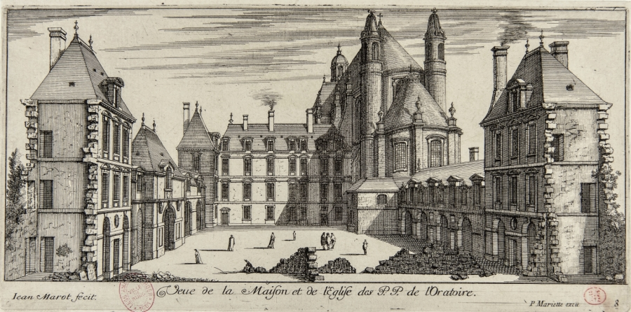
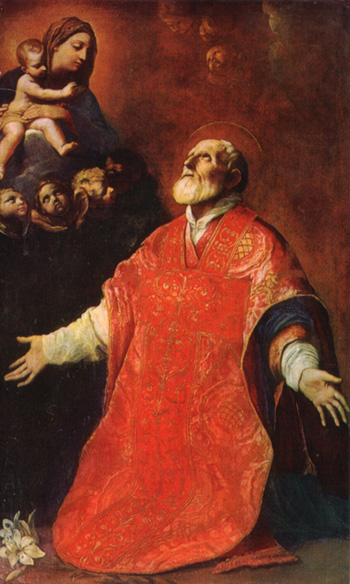
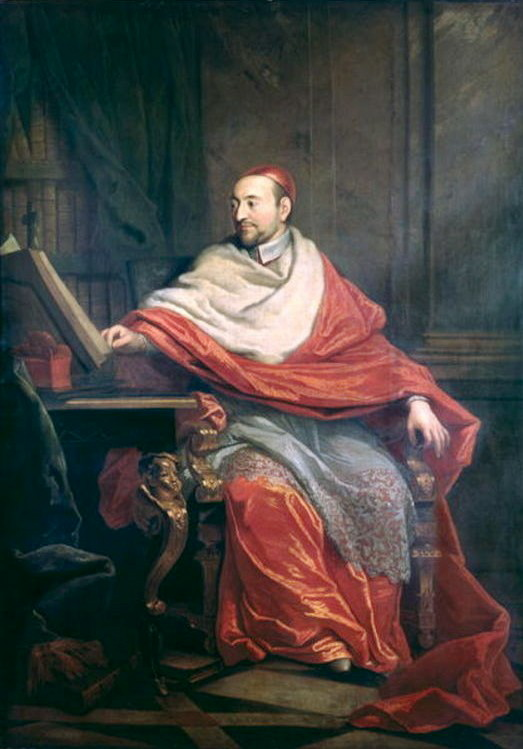
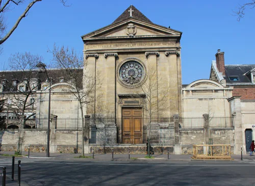
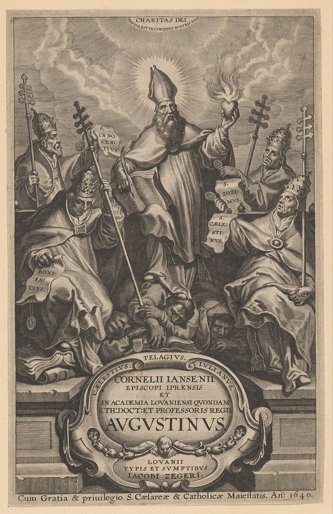
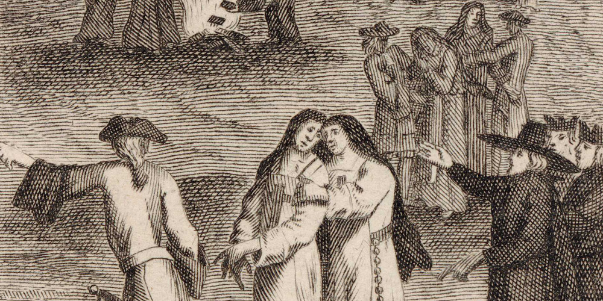
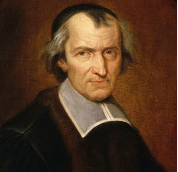
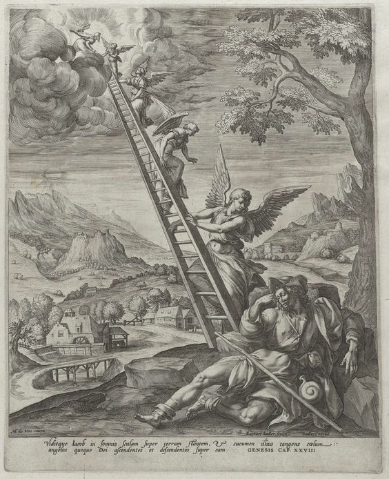
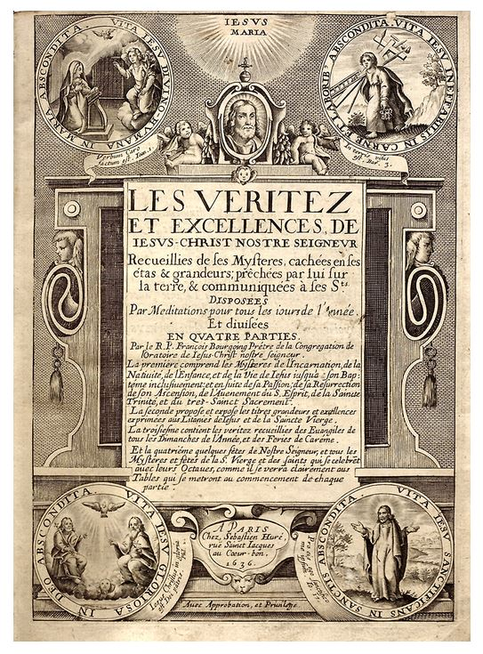

Un Dieu, un Christ, un évêque. Oraison du père Bourgoing
Pourquoi commencer cette série de lectures par l’oraison du Père Bourgoing ? Ce choix n’a rien d’arbitraire. Il fait partie, avec celle de Cornet, des oraisons qui sont le plus en situation. Celle-ci est un acte de parole destiné à intervenir dans un débat, avec des intentions précises qui guident en grande partie la conduite du discours et de démonstrations.
Autre intérêt : les oraisons destinées aux ecclésiastiques sont de loin les plus complexes à interpréter. Dans ces discours, Bossuet s’adresse à des intellectuels de haut vol, oratoriens ou sorbonnards, tous théologiens très cultivés et férus de patristique, à qui il peut parler par allusion, en une langue qui, pour nous, risque fort de rester cryptée si l’on ne prend le temps d’en démêler les références.
Les oraisons aux grands de ce monde ne présentent certes pas le même degré de difficulté : les mondains qui forment l’auditoire de Bossuet sont certes des « grands de chair », comme eût dit Pascal, mais ils ne règnent pas au même degré que les ecclésiastiques dans l’ordre de l’esprit. Henriette-Anne, par exemple, était incapable d’aligner deux mots de correspondance sans multiplier les fautes d’ortographe. Son frère Charles II, roi d’Angleterre, en était si épouvanté qu’il lui en faisait honte. 1.
Avec Bourgoing, c’est un autre public, aux attentes conceptuelles et religieuses bien plus élevées, et dans un contexte tendu. L’absence de publication est révélatrice : Bossuet ne pense pas à sa propre monumentalisation, comme ce sera le cas plus tard. Il cherche à agir, ici et maintenant, au sein d’une assemblée déchirée. La parole n’est pas destinée à être conservée et admirée : elle y est tout entière action, au même titre qu’une lettre de cachet ou une descente de police, et c’est comme fait littéraire, au sens que Marine Roussillon et Dinah Ribard donnent à ce mot, que nous allons l’étudier, subordonnant délibérément la rhétorique et la réflexion ecclésiologique aux intentions politiques de l’orateur.
Mais n’allons pas trop vite. Prenons les choses par le commencement.
*
Prononcée le 4 décembre 1662 dans l’église de l’Oratoire à Paris, quelques semaines après la mort de François Bourgoing, survenue le 28 octobre, l’Oraison funèbre du révérend père François Bourgoing occupe dans le corpus bossuétiste une place singulière si on en juge rétrospectivement par les grandes oraisons de la dernière période. Bourgoing n’est en effet ni un prince, ni un ministre, ni un grand capitaine : il est prêtre, membre du noyau primitif de l’Oratoire de Jésus, puis supérieur général de la congrégation pendant vingt et un ans. 2 Antoine Godeau, évêque de Vence, lui-même poète reconnu, surnommé jadis « Nain de Julie » lorsqu’il fréquentait la Chambre bleue de l’Hôtel de Rambouillet, célèbre la grand-messe ; Bossuet prend la parole devant un auditoire composé principalement d’ecclésiastiques, où les Oratoriens occupent naturellement une place essentielle. Emmanuel Bury a insisté sur ce point : le discours doit être rapporté à un public de prêtres et à une institution qui écoute, à travers l’éloge de son supérieur défunt, une définition de sa propre vocation.
Il y aurait quelque injustice à regarder cette oraison comme une œuvre préparatoire, imparfaite encore, en attente des grandes machines funèbres consacrées aux princesses ou au prince de Condé. Elle pose en réalité à Bossuet un problème différent, et sans doute plus radical. Dans les oraisons consacrées aux grands du monde, la difficulté est de convertir une grandeur équivoque (naissance, pouvoir, gloire militaire, réussite politique) en grandeur acceptable d’un point de vue chrétien. Ici, la matière paraît presque immédiatement compatible avec l’éloquence sacrée et le risque est presque inverse: il s’agit de ne pas transformer l’oraison en « panégyrique » (p. 43), genre que Bossuet pratiquait par ailleurs. Le défunt est un prêtre ; sa vie est celle d’un homme voué à l’Église ; la communauté qui demande son éloge est celle à laquelle il appartenait. La contradiction constitutive du genre funèbre semble donc disparaître, du moins a priori. Bossuet le précise dès l’exorde : il n’aura besoin ni des « fausses couleurs de la rhétorique », ni des « détours de la flatterie » (p. 44). Pourtant cette facilité apparente ouvre aussitôt une autre difficulté : comment louer un prêtre sans substituer la gloire d’un homme à celle de son ministère ? Comment célébrer un supérieur sans transformer l’oraison chrétienne en monument personnel ? Pierre Lyraud et Anne Régent-Susini ont récemment rappelé combien l’oraison funèbre constitue chez Bossuet un genre instable, perpétuellement occupé à réfléchir sur sa propre légitimité : l’épidictique y demeure nécessaire, mais sous la surveillance d’une éloquence sacrée qui doit échapper à la complaisance, à l’apologie et à l’ostentation. Bourgoing en fournit un cas pour ainsi dire expérimental : Bossuet y oppose lui-même l’éloge d’un prêtre au « panégyrique » des princes et demande si l’oraison funèbre peut cesser d’être une concession mondaine pour devenir un acte véritablement ecclésial.
Il est aussi une autre difficulté plus insidieuse que Bossuet, tout à son éloge, se garde d’évoquer explicitement: au fond, le père Bourgoing, saint homme sans doute, mérite-t-il vraiment un panégyrique sans nuance au regard de l’état dans lequel il laisse son Oratoire ? L’actualité donne à cette interrogation une acuité particulière. L’Oratoire que Bossuet célèbre n’est pas en 1662 une communauté paisiblement unanime. Depuis les années 1640, la querelle de la grâce y a créé des lignes de partage ; la condamnation des Cinq Propositions, puis la question du Formulaire, ont suscité parmi les Oratoriens diverses attitudes, de l’adhésion aux réserves. Bourgoing avait lui-même exhorté en 1657 les Oratoriens à la soumission au Saint-Siège, aux prélats et à l’Église 3 . Les tensions ne s’étaient pourtant pas entièrement résorbées : les années 1661-1662 avaient encore été marquées par des conflits de gouvernement et par l’éloignement de plusieurs membres suspects ou controversés. Dans la version de l’oraison qui nous a été conservée, certes, Bossuet n’attaque pas les « jansénistes » dans cette oraison : le ton n’est pas polémique, aucune proposition théologique n’est discutée, aucun adversaire n’est désigné ad hominem. Bossuet généralise et requalifie en problème d’unité ecclésiale un ensemble de divisions dont les controverses de la grâce constituent la composante essentielle. L’injonction « ensevelissez sans retour ces noms de parti » consiste précisément à refuser de reconduire dans le discours funèbre les désignations qui entretiennent les camps. Mais nous verrons que, comme souvent, celui qui se prétend au-dessus des partis est rarement indifférent aux termes et aux enjeux de la controverse.
C’est pourquoi le second point, consacré de façon apparemment surprenante au « plan de la sainte Église » (p. 52), ne doit être lu ni comme une digression doctrinale, ni comme le simple cryptage d’une polémique circonstancielle. Il constitue le lieu où la biographie devient ecclésiologie, parce que le gouvernement de Bourgoing ne peut être compris sans une définition de l’ordre auquel il a prétendu soumettre sa congrégation. Bossuet choisit son thème dans la première épître à Timothée : Qui bene praesunt presbyteri, duplici honore digni habeantur, « Les prêtres qui gouvernent sagement doivent être tenus dignes d’un double honneur » (p. 43). Le « double honneur » détermine les deux points : Bourgoing sera célébré comme prêtre, puis comme supérieur sage. Mais cette division produit bientôt un mouvement beaucoup plus ample : la vie particulière conduit à une théorie du sacerdoce ; le sacerdoce à l’Oratoire ; l’Oratoire à l’Église ; l’Église revient vers la congrégation comme norme ; enfin la norme se réincarne dans le corps ascétique et dans la mort de Bourgoing, avant de devenir règle d’imitation pour les survivants. C’est cette structure circulaire et réversible (personne, office, institution, Église, puis Église, institution, corps, imitation) qui donne à l’oraison sa cohérence – néanmoins sur fond de rappel à l’ordre très net pour ceux qui, dans l’assemblée, seraient tentés par la dissidence, en ces moments de transition politique qui sont toujours des moments de fragilité.
Nous proposerons donc la problématique suivante :
Comment Bossuet convertit-il l’éloge funèbre d’un prêtre en une parole d’institution qui, à partir d’une vie singulière, définit le ministère sacerdotal, recompose l’unité ecclésiale et transforme finalement la mémoire du mort en norme vivante pour les survivants, sur fond assourdi de menaces de dissensions internes ?
Après deux préambules nécessaires et aussi brefs que possible, nous verrons d’abord comment l’oraison prétend consacrer l’éloge, en faisant de Bourgoing moins le bénéficiaire d’un « panégyrique », qui ne serait pas tout à fait adapté à la forme de l’oraison funèbre, que l’incarnation d’un idéal sacerdotal ; puis comment elle change d’échelle, du prêtre à l’Église ; enfin comment, après cette expansion doctrinale et institutionnelle, Bossuet revient au corps, à la mort et aux affects, afin de manifester l’incarnation de la norme dans un exemple offert à l’imitation.


Préambules
L’Oratoire en France : un foyer spirituel et intellectuel au temps de la Réforme catholique
Lorsqu’on pense à la Réforme catholique, on songe tout de suite à l’oeuvre des jésuites, et on oublie parfois que d’autres institutions ont joué un rôle considérable dans la diffusion de l’esprit de Trente. En particulier, l’importance de l’Oratoire, en France, ne doit pas être sous-estimée. L’Oratoire trouve son origine à à Rome. Autour de saint Philippe Néri (1515-1595), vers le milieu du XVIe siècle se forme un cénacle de clercs et de laïcs réunis pour la prière, la lecture, la prédication et les exercices spirituels ; la congrégation romaine de l’Oratoire reçoit la reconnaissance pontificale en 1575. Elle offre un modèle original : une vie sacerdotale communautaire qui ne prend pas la forme de l’ordre religieux traditionnel. Notons déjà que, dans l’éloge de Bourgoing figure son panégyrique de saint Philippe Néri (p . 50)


C’est de ce modèle que s’inspire un très important homme d’Eglise et théologien du premier XVIIe siècle, Pierre de Bérulle (1575-1627). Le 11 novembre 1611, Bérulle réunit à Paris, rue saint Jacques, une première communauté de prêtres, sans lien institutionnel direct avec le modèle italien ; l’institution, appelée Société de l’Oratoire de Jésus et de Marie, est approuvée par Paul V en 1613. L’Oratoire de Jésus possède d’ailleurs une organisation différente de l’Oratoire romain : les maisons françaises sont rassemblées sous l’autorité d’un supérieur général, alors que les maisons italiennes conservent une large autonomie. Surtout, le projet de Bérulle répond directement à l’une des grandes préoccupations de la Réforme catholique post-tridentine : réformer l’Église en réformant et en formant son clergé. L’Oratoire est une société de prêtres séculiers vivant en communauté, sans les vœux solennels propres aux ordres religieux, vouée à la sanctification du prêtre, à la prédication, à la direction spirituelle et à l’enseignement.


Bérulle et l’Oratoire constituent des foyers essentiels de ce que l’on appellera beaucoup plus tard, sous l’impulsion d’Henri Bremond, l’« École française de spiritualité ». Le terme est anachronique et ne doit pas tromper : il ne désigne pas une « école » constituée avec doctrine et programme. Le mot permet néanmoins de repérer une constellation extrêmement influente autour de Bérulle, Condren, Olier, Jean Eudes, avec des proximités plus ou moins fortes avec Vincent de Paul et d’autres acteurs de la rénovation catholique en France. L’accent porte notamment sur la grandeur de Dieu, le rapport de la créature à son néant, la contemplation des « états » et mystères du Christ, et surtout, en ce qui nous concerne aujourd’hui, sur une conception très élevée du sacerdoce comme participation au sacerdoce même de Jésus-Christ 4 . L’Oratoire de Jésus est ainsi l’un des principaux foyers de diffusion de cette spiritualité, que, par commodité, nous nommerons « Ecole française », en gardant à ce terme un sens lâche et synonyme de spiritualité d’inspiration bérullienne .
Cette effervescence spirituelle et intellectuelle suscita, inévitablement, des débats, au sein même de l’Oratoire. La succession des premiers supérieurs manifeste bien qu’il existe des inflexions à l’intérieur même de cette Institution. Bérulle gouverne la congrégation jusqu’à sa mort en 1629. Charles de Condren, supérieur de 1629 à 1641, est une personnalité plus intérieure, plus secrète, voire mystique, dont la spiritualité pousse très loin les thèmes du sacrifice, de l’offrande et de l’anéantissement de soi en union au Christ ; son influence de directeur spirituel, est immense, en particulier sur notamment sur Jean-Jacques Olier, mais aussi, à Port-Royal, sur mère Agnès, autrice d’un Chapelet secret d’inspiration condrénienne. Vincent Carraud a pu caractériser Condren comme plus « néantisant » et plus « sacrificiel » encore que Bérulle 5 .
François Bourgoing, qui avait appartenu au premier noyau de l’Oratoire, avait été l’assistant de Condren avant de lui succéder : élu troisième supérieur général en 1641, il gouverna jusqu’à sa mort en 1662. Après l’institution fut dirigée par le prédicateur Jean-François Senault, élu en 1663.
Il est donc essentiel de retenir que Bourgoing n’est pas seulement le supérieur d’une congrégation quelconque. Il appartient à la toute première génération ; il a connu Bérulle, travaillé avec Condren, puis dirigé pendant vingt et un ans l’institution qui lui avait été transmise. Bossuet le situe parmi les tout premiers compagnons de l’Oratoire.
À cette fonction spirituelle s’ajoute très vite une influence éducative et intellectuelle considérable. L’enseignement des laïcs n’était pas au premier plan du projet initial de Bérulle ; il devint pourtant l’un des grands champs d’activité de la congrégation. L’Oratoire possèdait vingt-six collèges dès 1670 ; Juilly, dans l’actuelle Seine-Marne, fondé sous Condren en 1638, reste le plus célèbre, mais il faut ajouter Dieppe, Le Mans, Marseille et bien d’autres établissements dans le royaume. Dans le paysage scolaire français, les Oratoriens sont vite devenus les principaux concurrents des Jésuites. Ils intervenaient également dans la formation du clergé et la direction de séminaires.


Cette influence dépasse largement la pédagogie au sens scolaire du terme : l’Oratoire devient un véritable foyer de la République des lettres et des savoirs, non sans être traversé par les tensions du monde intellectuel, et en lien direct avec ce dynamisme. L’Oratoire joua un rôle majeur dans la diffusion des idées nouvelles. Les Oratoriens contribuèrent par exemple à l’étude du cartésianisme, qui séduisit rapidement plusieurs membres importants. Le plus célèbre est Nicolas Malebranche, dont la synthèse de 1675, La Recheche de la vérité, tente de conjuguer la philosophie de Descartes avec l’héritage du christianisme augustinien. On peut aussi citer les noms de Richard Simon, qui créa la critique biblique, Louis Thomassin en théologie, Bernard Lamy en rhétorique et en poétique, ou encore Massillon, rival de Bossuet, Fléchier et Bourdaloue dans l’éloquence sacrée. On peut ajouter à cette liste le nom d’un « confrère » inattendu : en 1641, âgé de vingt ans, Jean de La Fontaine entra à l’Oratoire de Paris dans la perspective d’embrasser une vie ecclésiastique ; il était peu fait pour cette carrière, et l’expérience fut brève (elle dura environ dix-huit mois). Le futur fabuliste était bien plus attiré par les poètes et par L’Astrée que par la théologie. Ce passage rapide suffit néanmoins à montrer combien l’Oratoire pouvait apparaître attractif, et comme une voie normale de formation intellectuelle et religieuse pour un jeune homme cultivé du XVIIe siècle.
Lorsqu’on mesure la place occupée par l’Oratoire dans la vie de la pensée, on comprend l’importance et le défi que représente pour Bossuet l’oraison du 4 décembre 1662, dans l’église parisienne de l’Oratoire, rue Saint-Honoré – église que Louis XIII avait faite chapelle royale du Louvre en 1623, de sorte que les Oratoriens y étaient devenus chapelains du Louvre. On y célèbrait de grandes cérémonies de la monarchie et des services funèbres prestigieux, notamment ceux de Richelieu et de Louis XIII. L’oraison qu’il nous est donnée d’étudier a donc été prononcée dans un lieu très proche du pouvoir royal, ce qui ne saurait être indifférent pour la compréhension du texte.
Bossuet ne vient pas faire l’éloge dans une église quelconque d’un pieux ecclésiastique solitaire ; il parle, au cœur de Paris et à l’ombre du Louvre, dans l’une des institutions qui ont le plus fortement contribué à refonder le sacerdoce, la spiritualité, la prédication, l’enseignement, et plus généralement la culture catholique et intellectuelle du XVIIesiècle. Dès lors, quand son discours passe de Bourgoing au prêtre, du prêtre à l’Oratoire, puis de l’Oratoire à l’Église, ce mouvement n’a rien d’une amplification abstraite : il épouse la stature réelle de l’institution devant laquelle et pour laquelle Bossuet parle.
Second préambule. « Ensevelissez ces noms de parti » (p. 56) ou : le jansénisme à l’Oratoire
Je ne proposerai pas ici un cours sur le jansénisme, qu’on pourra trouver sur mon site sur Port-Royal : je me limiterai à quelques éléments dont les Agrégatives et Agrégatifs ont besoin pour comprendre les luttes et les rivalités sous-jacentes à l’Oratoire et dont Bossuet tient compte dans ce discours. Ce qu’il faut comprendre, c’est que la question de la grâce divine a provoqué, vers 1656-1662, une crise d’autorité, d’obéissance et d’unité ecclésiale, et cette crise traverse tout particulièrement l’Oratoire. Bien sûr, nous expliquons le texte édité par Truchet, mais une solide tradition éditoriale nous rapporte que le discours tel qu’il fut prononcé était bien plus explicitement antijanséniste que la version parvenue jusqu’à nous.
Très brièvement, qu’est-ce que le « jansénisme » ?
Au départ, c’est une querelle théologique extrêmement technique sur la grâce, au sein du catholicisme. L’Augustinus de Jansénius, publié en 1640, prétend restaurer la véritable doctrine de saint Augustin sur la grâce, la liberté et la nature humaine déchue. Jansénius prétend que sans la force que donne la grâce divine, les hommes n’ont en propre que le mal.Les controverses sont très complexes, parce qu’elles débouchent sur une interrogation portant sur la liberté métaphysique : sommes-nous libres de faire le bien ou le mal, ou sommes-nous déterminés? C’était le noeud du débat. Il suffit de savoir que les amis de Port-Royal pensent défendre contre les théologies jugées trop favorables aux pouvoirs de la volonté humaine une conception fortement augustinienne de la primauté de la grâce, nécessairement à l’origine de nos actions bonnes selon ces « jansénistes ». Mais augustinien ne signifie nullement « janséniste » : l’influence d’Augustin déborde immensément Port-Royal, et Bossuet lui-même est profondément augustinien.


La querelle change de nature avec les «cinq propositions». En 1653, Innocent X condamne cinq propositions concernant la grâce. Ces propositions ont été rédigées par Nicolas Cornet (tiens !) sans êtres explicitement rattachées au livre de Jansénius. Les défenseurs de Port-Royal acceptent progressivement la condamnation doctrinale (ce que l’on appellera la question de droit) : ces propositions, prises dans le sens condamné, sont effectivement condamnables, reconnaissent-ils. Mais ils contestent la question de fait : ces propositions, introuvables telles quelles, ne se trouvent pas réellement dans l’Augustinus, et Jansénius ne les a pas soutenues dans ce sens. Antoine Arnauld fait de cette distinction un point de résistance majeur. En 1656, Alexandre VII tranche précisément ce point en déclarant que les propositions sont bien tirées de Jansénius et condamnées dans son sens. L’affaire, du point de vue du Vatican, est close, et dès lors, la question se déplace.
Dès lors, l’enjeu n’est plus seulement théologique : ce qui est en question, c’est l’obéissance à l’Église.Le Formulaire de 1657 exige que l’on reconnaisse non seulement la condamnation des propositions, mais leur présence dans Jansénius. Voilà le nœud à faire saisir. Les opposants peuvent dire : je soumets ma foi à l’Église lorsqu’elle définit la doctrine ; puis-je être obligé en conscience d’affirmer comme certain un fait de lecture qui n’est pas textuellement vérifiable ? Les autorités répondent de plus en plus : refuser cette affirmation, c’est entretenir la désobéissance et le parti. En avril 1661, le pouvoir royal étend l’obligation de signature aux communautés religieuses. La crise devient simultanément théologique, ecclésiologique, disciplinaire et politique.


L’Oratoire est particulièrement exposé. La crise, on le sait, va atteindre des niveaux explosifs à Port-Royal, mais la célèbre abbaye est loin d’être la seule à être touchée. L’Oratoire n’était pas épargné. L’Oratoire était un milieu très fortement pénétré par la culture augustinienne, où existaient des sympathies, des proximités personnelles et des positions diverses à l’égard de Port-Royal. Bourgoing était contemporain de la montée des tensions. Toujours selon les Mémoires de Louis Batterel, déjà citées, en 1657, près de 400 prêtres, soit plus de 90 % de la congrégation, avaient adhéré au Formulaire : chiffre impressionnant, mais qui ne signifiait nullement que les consciences étaient devenues homogènes. Dominique Julia rappelle justement que l’exigence de soumission provoque dans cette congrégation savante des débats de conscience dont nous ne saisissons qu’imparfaitement l’ampleur. 6
Bourgoing lui-même choisit nettement la soumission. En 1657-1658, il poussa les Oratoriens à recevoir sans réserve la décision d’Alexandre VII et chercha manifestement à préserver la congrégation de l’accusation de jansénisme. Mais il n’y parvint pas complètement. Les tensions se poursuivirent se traduisirent en mesures concrètes : en juillet 1662, quelques mois seulement avant sa mort et l’oraison de Bossuet, les PP. Du Breuil, Juannet et Séguenot, qui occupaient des fonctions importantes, furent éloignés par lettres de cachet. L’Oratoire fit adresser au roi une requête où il redoutait que ces mesures ne fassent considérer la congrégation tout entière comme suspecte de jansénisme. Autrement dit, le 4 décembre 1662, « division », « parti », « obéissance », « pape », « évêques » ne sont absolument pas des mots abstraits pour l’auditoire : Bossuet vient prononcer un rappel à l’ordre et invite les prêtres à rester fidèles à Bourgoing, c’est-à-dire à la condamnation pontificale, dans un contexte tendu et alors que plusieurs responsables viennent d’être exilés.
C’est exactement cela qui explique la seconde partie de l’oraison. Bossuet n’entre pas dans la théologie de la grâce. Il déplace la question et change de terrain. Il remonte à l’Incarnation, à l’unité de l’Église, aux évêques, à Pierre, au pape, puis redescend vers les prêtres comme « coopérateurs » de l’épiscopat 7 . Cette ecclésiologie devient exhortation : « éteignez ces feux de division, ensevelissez sans retour ces noms de parti ». Dans le texte que nous lisons, la querelle est donc déthéologisée avant d’être requalifiée : le problème n’est plus de savoir quelle conception de la grâce l’Oratoire préfère, mais de rester unis dans l’Eglise et disponibles pour son service. Toute l’oraison tend en réalité à inviter l’Oratoire à la soumission au nom de l’unité.
Lecture suivie
Consacrer l’éloge
« Continuation du mystère » (p. 44) et rhétorique du Dieu caché.
L’oraison s’ouvre moins par l’éloge de Bourgoing que par un étonnant examen de conscience du genre funèbre. Dès le premier mouvement, Bossuet transforme la situation liturgique en tribunal de l’éloquence de la chaire. L’exorde se construit sur une opposition entre deux matières funèbres : les funérailles des laïcs et celles des ecclésiastiques. Bossuet, sur le mode de la confidence, avoue qu’il plaint habituellement les prédicateurs « lorsqu’ils font les panégyriques funèbres des princes et des grands du monde » (p. 43). Les grands, explique-t-il déjà, exercent des charges où se mêlent inévitablement « licence et ambition », « intérêt et injustice » ; la guerre, la négociation, les « affaires » produisent une matière dont Dieu a trop peu de part pour que l’orateur chrétien puisse aisément la consacrer. Le lexique organise le conflit entre ces deux régimes de grandeur. D’un côté, tout ce qui relève du monde possède de « l’éclat », fait du « bruit », réclame un « ton ferme et magnifique » ; de l’autre, l’orateur sacré doit parler selon la vérité. Bossuet ne condamne donc pas seulement la flatterie comme faute morale : il construit une opposition proprement esthétique entre l’éclat extérieur et la légitimité intérieure de la parole. Bossuet ne se doute sans doute pas encore qu’il lui faudra, quelque jour, accomplir cet exercice d’équilibre. Pour l’instant, il se réjouit de pouvoir peindre Bourgoing au naturel, sans être obligé de gommer les fautes et les scandales qui ne manquent pas de ponctuer les vies mondaines : « Pour orner une telle vie, je n’ai pas besoin d’emprunter les fausses couleurs de la rhétorique, et encore moins les détours de la flatterie. » (p. 44). C’est la raison pour laquelle l’oraison s’ouvre sur une action de grâces: « Je commencerai ce discours en faisant au Dieu vivant des remerciements solennels » : l’objet de la louange est, cette fois, réellement digne de louange.
Le vocabulaire pictural, qu’on retrouvera à la fin de l’oraison à travers l’image du « tableau » (p . 62), souligne ici la fausseté des artifices de l’éloquence : les « couleurs » rhétoriques sont « fausses » lorsqu’elles ajoutent au réel ce qu’il ne possède pas. L’éloquence épidictique est soupçonnée de maquiller son objet. Le mot de « détours » relève de la trajectoire : la flatterie contourne ce qu’elle ne peut dire franchement. À la peinture mensongère répond donc la marche oblique. Or Bossuet affirme immédiatement une parole rectiligne : « Je n’ai rien ni à taire ni à déguiser. » (p . 44). On retrouvait ici la posture de la parrhèsia, qui est l’affectation de dire la vérité, et qui caractérise aussi bien la parole du prédicateur que celle du satiriste. La coordination négative donne à ce topos de la franchise la forme ramassée d’un manifeste. Ne rien « taire », c’est refuser le silence prudent ; ne rien « déguiser », c’est refuser la transformation flatteuse et les fleurs artificielles de la rhétorique. La transparence du mort autoriserait, à en croire Bossuet, une parfaite transparence du discours. Cette franchise est évidemment mise en scène. La parrhèsia n’est pas absence de rhétorique : c’est une rhétorique de la sincérité. Bossuet construit son ethos d’orateur véridique en opposant sa parole véridique et simple aux artifices de l’éloge mondain. La posture est d’autant plus surprenante que l’oraison, très travaillée, déploie aussitôt antithèses, prétérition, images et amplifications. Autrement dit, la vérité du discours passe par une affectation de non-artifice : nous reviendrons bien sûr sur ce paradoxe constitutif de l’oraison funèbre.
Dans le cas précis de ce discours, cette parrhèsia comporte aussi une portée institutionnelle : Bossuet peut se poser en homme qui dit la vérité à l’Oratoire précisément parce qu’il prétend ne défendre ni intérêt particulier ni parti, mais seulement l’ordre de l’Église. Laparrhèsia, comme franchise affectée, devient ainsi l’un des instruments de son autorité ; le discours anti-rhétorique est encore de la rhétorique, le refus de « l’art » est construit avec l’art le plus consommé.
Bossuet ne recule pas même devant la prétérition : tout en affectant de rejeter les « ornements étrangers », et en refusant d’aller « rechercher bien loin sa noblesse dans sa naissance », il évoque en réalité la famille nivernaise de Bourgoing, les charges exercées par ses ancêtres, les fondations pieuses de son lignage. Il affirme certes ne les « toucher qu’en passant » : en apparence, c’est précisément la définition même de la prétérition (p. 44). En réalité, les choses sont peut-être plus complexes. Le capital familial n’est pas effacé, il est néanmoins subordonné, comme il le sera, au fond, dans les grandes oraisons de la fin de sa carrière. Bossuet opère un déplacement de la noblesse héritée vers ce que Grégoire de Nazianze lui permet d’appeler la « noblesse personnelle ». Le procédé est analogue à celui que l’on retrouvera dans d’autres oraisons : la grandeur sociale n’est pas simplement niée, elle devient un matériau qu’un autre ordre de valeur doit absorber. Le lignage, si essentiel dans ces sociétés aristocratiques, n’est pas disqualifié, mais il convient qu’il soit dépassé par un autre ordre de valeurs.
Ce paradoxe est capital pour toute lecture de Bossuet. Il ne faut pas conclure que la bonne éloquence serait une éloquence sans figures. Anne Régent-Susini et Laurent Susini ont montré que la « simplicité » revendiquée par Bossuet désigne moins l’absence de travail rhétorique que l’effacement proclamé de l’orateur comme source de l’autorité : le discours doit donner l’impression de tirer sa force d’une vérité qui le précède. Le prédicateur ne renonce donc pas aux ressources de l’éloquence ; il les hiérarchise en refusant qu’elles deviennent leur propre fin et ne servent qu’à manifester sa virtuosité. « Si la simplicité vénérable d’un prêtre de Jésus-Christ peut soutenir un discours funèbre, celui-ci ne sera pas une interruption, mais plutôt une continuation du mystère » (p. 44).
Arrêtons-nous sur cette « continuation du mystère » que Truchet identifie de manière un peu générique à « la messe » dans son glossaire. En réalité, cette phrase constitue probablement l’une des déclarations les plus ambitieuses de tout le corpus au programme sur la nature et la fonction de l’oraison funèbre. Le lexique laisse peu de doute : « auteur », « sacrifice » renvoieet au mystère Eucharistique. Il faut s’arrêter un instant sur ce rapprochement, étonnant à première vue, entre le sermon et la communion. Dans la spiritualité de l’Ecole française, on perçoit l’Eucharistie comme une prolongation de l’Incarnation : Dieu s’abaisse, se dissimule, s’anéantit dans les espèces du pain et du vin comme il s’était dépouillé de toute sa grandeur et s’était abaissé à prendre chair 8 . De façon analogue, explique Bossuet dans le Sermon sur la parole de Dieu, le sermon est un ensemble de signes (les mots) qui enclosent la Vérité divine. Cette analogie est évidemment essentielle pour comprendre la dimension profondément sacrée de l’oraison :
« Dans le mystère de l’Eucharistie, les espèces que vous voyez sont des signes, mais ce qui est enfermé dedans, c’est le corps même de Jésus-Christ. Et dans les discours sacrés, les paroles que vous entendez sont des signes, mais la pensée qui les produit et celle qu’elles vous portent, c’est la vérité même du Fils de Dieu. » (« Sermon sur la parole de Dieu ». Cité par Laurent Susini, « Ipsum audite », art. cit.)
Dans l’Eucharistie, une réalité sensible et humble, les espèces du pain, cache et porte une réalité divine invisible, le corps du Christ. Dans la prédication, une autre réalité sensible, les mots prononcés par une voix humaine, cache et porte elle aussi une réalité qui la dépasse : la prédication selon Bossuet est une des formes de cette spiritualité du Dieu caché, partagée par toute l’Ecole française (et non seulement, comme on pourrait le croire, par le seul Pascal).
La « continuation du mystère » ne renvoie pas à une succession, comme si le sermon poursuivait l’œuvre de sanctification entamée par le saint sacrifice. La continuité est de structure. D’un côté, les espèces visibles et les paroles audibles ; de l’autre, la présence invisible du Christ, la Vérité même (Jean, 14, 6), puisque Dieu est Verbe. Les paroles de Bossuet ne sont pas seulement l’écho des paroles du Christ : elles sont logos, elles sont elles-mêmes le Verbe tout-puissant du Créateur du monde, la parole de vie qui ressuscita Lazare. On saurait difficilement imaginer une conception plus sacrée de la prédication.
Le fidèle doit donc, dans les deux cas, traverser le sensible pour atteindre l’invisible. De même qu’il ne doit pas s’arrêter au pain ; de même, il ne doit pas s’arrêter à la beauté de la voix, à l’éloquence, aux figures, au plaisir du discours. C’est précisément pourquoi Bossuet rêve de pouvoir retrancher de sa parole « tout ce qui flatte l’oreille », « délecte l’esprit » ou « surprend l’imagination », pour ne laisser paraître que « la vérité toute simple » et « l’efficace toute pure du Saint-Esprit » : le cœur même de son sermon – et pourtant inséparable des mots de son sermon, comme la chair du Christ est elle-même, dans sa kénose même, sanctifiée (il n’y aurait pas une vérité simple indépendante des termes de l’éloquence : la simplicité est dans les mots indignes qui la désignent.) .
Ainsi se comprend la portée métapoétique de cet exorde: Bossuet fixe le cadre qui lui permettra non d’abolir l’éloge épidictique, mais de le consacrer. La louange devient une continuation du mystère eucharistique par d’autres moyens. La question n’est pas ici : comment christianiser la gloire d’un grand ? Dans le cas de Bourgoing, elle consiste à se demander comment louer un prêtre de telle manière que la louange retourne vers le sacerdoce, l’Église et Dieu. Le discours devra faire en sorte que l’homme célébré soit d’autant plus grand qu’il paraît moins posséder en propre sa grandeur – comme la parole du prédicateur, qui ne tire son autorité que de la dépossession du discours de son énonciateur.
Le « double honneur » : la fabrique scripturaire de la biographie
Le texte scripturaire initial n’a rien de décoratif : il constitue véritablement la matrice de la dispositio. « Les prêtres qui gouvernent sagement doivent être tenus dignes d’un double honneur » : Bossuet prélève dans 1 Timothée 5, 17 deux termes qui vont organiser la vie du défunt, presbyteri et praesunt. Bourgoing a été prêtre et il a gouverné ; son « double honneur » sera donc celui de la sainteté sacerdotale et celui de la direction de l’Oratoire. « Nous lui rendrons un double honneur » : le premier « pour avoir vécu saintement en l’esprit du sacerdoce », et le second « pour avoir élevé dans le même esprit la sainte Congrégation qu’il a gouvernée » (p. 45).
La citation est révélatrice de la façon dont travaille Bossuet dans ses évocations : le verset biblique fournit à Bossuet une matrice. C’est la Bible qui donne donne sa forme intelligible au passage du père Bourgoing dans la vallée de larmes, et qui lui confère ainsi son sens. Les faits n’arrivent au discours qu’en tant qu’ils peuvent devenir accomplissement du verset. L’obsession de donner du sens aux événements est évidemment au cœur de toute l’œuvre de Bossuet et de son interêt tout particulier pour la notion de Providence. Cette ardeur à déchiffrer le sens crypté d’une vie à la lumière d’une grille de lecture scripturaire est sensible dans la formule qui ouvre la carrière sacerdotale : « La préparation pour le sacerdoce n’est pas […] une application de quelques jours, mais une étude de toute la vie » (p. 45). L’antithèse abolit le moment ponctuel de l’ordination au profit d’une temporalité vocationnelle que révèle le prédicateur. Pour l’École française, la prêtrise n’est pas un métier ordinaire : c’est une vocation, un appel auquel on répond et qui engage toute l’existence, dans tous ses aspects, pour toute la vie. Le sacerdoce est moins un événement qu’une forme préalable donnée à l’existence. La phrase développe à plusieurs reprises le patron « ce n’est pas… mais… » : À la brièveté administrative de la cérémonie se substitue la longue durée spirituelle ; au statut conféré, une disposition antérieure du sujet que le prédicateur a pour charge de révéler à l’occasion de la mort. Nous constatons ici ce que nous notions dans un précédent billet: c’est la mort qui permet de mesurer le sens, et de saisir la vie comme destinée providentielle.
L’exemple patristique de Basile de Césarée permet à Bossuet de condenser cette conception dans une formule paradoxale : Basile était, selon Grégoire de Nazianze, « prêtre […] avant même que d’être prêtre » (p . 45). Le paradoxe dissocie le sacrement de son anticipation vertueuse : non certes pour rendre l’ordination inutile, mais pour faire de l’état sacerdotal l’accomplissement visible d’une forme intérieure déjà préparée dans le plan de Dieu. Appliqué à Bourgoing, le mot autorise une biographie téléologique : l’enfance elle-même devient commencement du prêtre, mais c’est l’oraison funèbre, à l’occasion du décès (de Basile ou de Bourgoing), qui permet d’en prendre la mesure.
Le rappel des études poursuit cette fabrication. Bourgoing est formé à la Sorbonne : l’éloge de la Sorbonne s’explique par l’arrière-plan polémique. Bossuet use une fois de plus de la prétérition, affectant de devoir garder un silence modeste sur une faculté dont il est également sorti, mais en réalité, cet éloge résonne autrement en 1662 : quelques années, auparavant, en 1656, la Sorbonne avait été le théâtre de retentissants débats qui ont abouti à l’expulsion d’Arnauld et de tous ses amis, condamnés pour jansénisme, alors que Nicolas Cornet en était syndic. Pascal nous a laissé le récit de ces violentes controverses dans les Provinciales. On peut penser que, dans l’auditoire, les amis de Port-Royal et les tenants de Jansénius ne devaient pas tenir l’université de Paris dans la même estime que Bossuet.


L’entrée de Bérulle dans le discours change encore la dimension du propos (p. 46). L’importance de Bérulle dans la France catholique de la Contre Réforme ne saurait être sous-estimée. Il fut non seulement fondateur de l’Oratoire, comme on l’a vu, mais l’un des plus grands penseurs chrétiens du début du XVIIe siècle et un homme politique de premier plan. Le cardinal est présenté comme un « homme vraiment illustre », auquel « même la pourpre romaine n’a rien ajouté ». L’épidictique reproduit ici, à propos de Bérulle, l’opération accomplie à propos de Bourgoing : Bossuet ne condamne pas les honneurs ecclésiastiques visibles ; en réalité, ils peuvent même servir à magnifier la gloire de celui qui la reçoit, précisément s’il ne se laisse pas abuser par de telles grandeurs ; la catégorie sous-jacente pour interpréter cette attitude est celle de la distinction augustinienne de l’usage et de la jouissance : il est convenable d’user des biens terrestres à condition qu’on n’en jouisse pas pour eux-mêmes et qu’ils ne deviennent pas une source de satisfaction narcissique 9 . Les honneurs finissent, sous la plume de Bossuet, par ressemble à des épreuves.
Bossuet définit alors l’Oratoire dans une période devenue célèbre : « Là on n’a point d’autre esprit que l’esprit même de l’Église, ni d’autres règles que ses canons, ni d’autres supérieurs que ses évêques, ni d’autres biens que sa charité, ni d’autres vœux solennels que ceux du baptême et du sacerdoce ». La série des « ni… ni… ni… » (p . 47) produit une définition négative. L’Oratoire est moins décrit par ce qu’il possède que par ce qu’il refuse de posséder en dehors de l’Église. La véritable identité de l’Oratoire se trouve dans la dépossession, qui s’accorde avec la spiritualité d’humilité et de dépouillement qui se trouve au coeur des enseignements des Supérieurs successifs de l’Oratoire, Condren et Bourgoing en particulier. La négativité souligne l’analogie entre l’Oratoire et l’oratorien. Cet éloge négatif forme correspond au statut particulier d’une congrégation de prêtres séculiers : la Compagnie ne se présente pas comme un ordre retranché derrière des vœux religieux propres, mais comme un corps destiné au service de l’épiscopat et de l’Église. S’il est prudent de ne pas plaquer sur l’Oratoire une notion trop homogène comme « École française de spiritualité », il reste cependant légitime de reconnaître ici la matrice bérullienne d’un sacerdoce défini à partir de Jésus-Christ, de l’Église et du don de soi. Bérulle écrivait en effet :
« Le Christ est sur la croix hostie de rédemption et sur l’autel de l’Église hostie d’adoration. […] Ainsi que le prêtre soit hostie ! Il ne doit être autre chose dans sa vie, en son geste et actions qu’une hostie immolée à la gloire de Jésus. […] Le prêtre sacrifie Jésus. Qu’il sacrifie donc soi-même aussi. » 10
Bossuet parle de même du prêtre « victime. Sous le rappel à la conception du fondateur, on entend aussi, lié de près à celui-ci, un appel net à la soumission aux évêques : les Oratoriens doivent « s’anéantir » et s’oublier dans l’obéissance s’ils veulent rester fidèles aux enseignements de leur premier maitre. Sans entrer dans les détails trop techniques, on peut aussi rappeler, à propos des « voeux solennels », que Bérulle, s’il n’avait pas imposé à ses prêtres séculiers les trois vœux monastiques (pauvreté, obéissance et chasteté), avait en revanche œuvré pour faire reconnaître une sorte de quatrième vœu, la servitude volontaire, qu’il proposa aux Carmélites et aux Oratoriens, et qui suscita de vives polémiques: « Je fais vœu à Dieu de servitude perpétuelle à Jésus-Christ ; à son humanité déifiée et à sa Divinité humanisée ». 11 . Les Oratoriens, à l’évocation des « vœux solennels », comprenaient instantanément et en tiraient les conséquences : la rébellion contre l’autorité du Supérieur sur les questions de la grâce est incompatible avec les engagements des Confrères, et contraire à l’esprit de soumission et d’anéantissement (la « servitude perpétuelle ») qui doit régner dans cette maison.
Le passage enchaîne les paradoxes : « Là une sainte liberté fait un saint engagement : on obéit sans dépendre ; on gouverne sans commander ; toute l’autorité est dans la douceur, et le respect s’entretient sans le secours de la crainte ». La symétrie « on obéit sans dépendre / on gouverne sans commander » constitue une petite merveille de prose abstraite, en décalage absolu avec les rivalités et les tensions qui menacent l’Oratoire de l’intérieur – mais les auditeurs ne s’y méprenaient pas. Le paradoxe ne signifie évidemment pas qu’il n’existe aucune autorité interne : il produit l’idéal d’une autorité rendue presque invisible par la « charité », qu’il faut entendre en sens chrétien le plus fort : l’Amour. Lorsqu’on est poussé par l’amour, on suit de bon coeur ce qui pourrait apparaitre autrement comme des contraintes, et c’est en ce sens, tout aussi oxymorique, que Jésus avait expliqué que son joux est un joug de douceur (« Oui, mon joug est facile à porter, et mon fardeau, léger », Matthieu, 11, 30). Or cette conception idéalisante d’une obéissance libératoire plutôt que coercitive est d’autant plus importante qu’elle résonne, rétrospectivement, avec les difficultés réelles du gouvernement de la congrégation. Le texte ne décrit pas une mécanique institutionnelle ; il donne à l’institution l’image normative qu’elle est appelée à reconnaître comme la sienne. Pour le dire plus simplement : Bossuet peint l’Oratoire non tel qu’il est, mais tel qu’il devrait être. On voit ici, comme on l’avait expliqué dans les billets précédents, que la parole funèbre a pour fonction de rendre visible et requalifier le réel. Elle choisit, dans l’histoire d’une congrégation traversée de crises et de divergences, une définition essentielle de l’Oratoire, fondée sur la liberté, la charité, et le service des évêques. Ce faisant, elle construit publiquement ce que doit signifier l’appartenance oratorienne.
L’entente qui doit régner à l’Oratoire est d’autant plus évidente aux yeux de Bossuet que l’Oratoire constitue une famille. Si Bossuet, comme il nous en avait prévenu, abandonne rapidement à propos de Bourgoing son ascendance biologique, il remplace les liens du sang par ceux qui l’unissent aux membres de la Congrétation: « le Père Bourgoing a besoin de vous […] mais […] vous aviez besoin de lui réciproquement » (p. 47). La famille biologique, brièvement évoquée au début, cède la place à la « Sainte Congrégation » ; Bourgoing devient un « Père », les Oratoriens des « frères » (p. 52). La filiation spirituelle remplace progressivement la filiation simplement humaine. Dans la perspective de l’Agrégation et de l’étude du corpus dans son ensemble, on notera cette oraison presque dépourvue des enjeux dynastiques qui structureront les pièces royales, la fonction familiale n’est donc pas absente, mais elle se retrouve intégrée à l’institution. L’Oratoire devient la maison dans laquelle une mémoire paternelle doit être transmise. Le lien avec les oraisons de la maturité n’est donc pas absent.
« Parler à Dieu, parler aux peuples » (p. 48) : l’éloquence comme servante
— Médiation de la parole
Le développement consacré à la prédication (p. 48) est beaucoup plus qu’un morceau d’éloquence épidictique. Il constitue un des cœurs méta-poétiques centraux pour notre étude, parce qu’en définissant la parole idéale de Bourgoing, Bossuet définit simultanément les conditions de légitimité de la parole qu’il est lui-même en train de prononcer : « Les ministres de Jésus-Christ ont deux principales fonctions : ils doivent parler à Dieu, ils doivent parler aux peuples ; parler à Dieu par l’oraison, parler aux peuples fidèles par la prédication de l’Évangile » (p. 48). Le parallélisme syntaxique donne au ministère une structure bipolaire. Un même verbe, « parler », reçoit deux destinataires : Dieu et les peuples. La répétition rend sensible la médiation sacerdotale. Le prêtre de l’Ecole française possède une identité sacrée, entre Dieu et les profanes. De sorte que le prêtre n’est pas celui qui possède une parole (Anne Régent, on le sait, y insiste beaucoup) ; il est en revanche comme une intersection ou un carrfour, un lieu où circulent deux paroles. Bossuet développe cette structure grâce à un épisode bien connu de la Genèse, celui de l’échelle de Jacob, qu’il nous faut ici relire :
Jacob étant donc sorti de Bersabée, allait à Haran ; et étant venu en un certain lieu, comme il voulait s’y reposer après le coucher du soleil, il prit une des pierres qui étaient là, et la mit sous sa tête, et s’endormit dans ce même lieu. Alors il vit en songe une échelle, dont le pied était appuyé sur la terre, et le haut touchait au ciel ; et des anges de Dieu montaient et descendaient le long de l’échelle. Il vit aussi le Seigneur appuyé sur le haut de l’échelle, qui lui dit : Je suis le Seigneur, le Dieu d’Abraham, votre père, et le Dieu d’Isaac. Je vous donnerai et à votre race la terre où vous dormez. Votre postérité sera nombreuse comme la poussière de la terre : vous vous étendrez à l’orient et à l’occident, au septentrion et au midi ; et Toutes LES NATIONS DE LA TERRE SERONT BÉNIES EN VOUS, et dans celui qui sortira de vous. Je serai votre protecteur partout où vous irez, je vous ramènerai dans ce pays, et je ne vous quitterai point que je n’aie accompli tout ce que je vous ai dit. Jacob s’étant éveillé après son sommeil, dit ces paroles : Le Seigneur est vraiment en ce lieu-ci, et je ne le savais pas. (Genèse, 28, 10-16, trad. Le Maistre de Sacy)


Les prêtres ne sont pas invités à imiter Jacob… mais… les anges de la vision. Ils doivent, comme les anges, « monter et descendre » : « priez et prêchez ». Puis Bossuet transforme l’image biblique en une sorte de circuit lumineux et hydraulique : « allez premièrement recevoir, et puis venez répandre les lumières ; allez puiser dans la source ; après venez arroser la terre et faire germer le fruit de vie » (p. 48). La succession des impératifs organise toute une cinétique de la grâce. Il faut « aller » avant de « venir », « recevoir » avant de « répandre », « puiser » avant d’« arroser ». Ces images sont essentielles, et sont à mettre en perspective avec l’héritage du pseudo-Denys : gardons-les en tête, nous y reviendrons un peu plus loin.
— L’éloquence légitime: illumination et soumission
Puis l’orateur s’enflamme dans une série d’exclamations à valeur réflexive et métapoétique : « O Dieu vivant et éternel, quel zèle ! quelle onction ! quelle douceur ! quelle » force ! quelle simplicité et quelle éloquence ! » (p. 49). La « simplicité » et « l’éloquence » ne sont nullement opposées : elles occupent au contraire ensemble le dernier membre de la série. La simplicité bossuétiste n’est donc pas nudité stylistique. Elle est une éloquence dont le rapport à sa fin demeure juste, et qui reste surbordonnée à la « doctrine céleste » . Une éloquence qui « suit comme la servante » (p . 51) est non seulement légitime: elle est, par définition, simple, c’est-à-dire qu’elle n’est pas surchargée d’ornements humains. Les figures procèdent du propos même, qui ne sauraient se passer d’éloquence pour se communiquer aux hommes. Mais nous reviendrons sur ce point précis d’une nécessité structurelle des figures. Inversement, les prédicateurs qui cherchent à attirer l’admiration sur eux-mêmes, et non sur celui qui est censé parler par leur bouche, s’attirent des imprécations qui elles-mêmes ne manquent pas d’éloquence : « Est-ce ainsi qu’on fait parler Jésus-Christ ? Savez-vous, ô prédicateurs, que ce divin conquérant veut régner sur les cœurs par votre parole ? » La métaphore politique et militaire paraît inattendue. Le Christ est « conquérant » ; la chaire est le lieu d’une guerre ; mais le territoire conquis est le cœur. Le vocabulaire guerrier, récusé dans l’exorde comme matière douteuse des panégyriques princiers, fait ici retour, converti en métaphore spirituelle. Comme dans les oraisons de la maturité, Bossuet ne renonce donc pas aux grandeurs du monde : il les transpose. Les images militaires ne sont au demeurant pas si surprenantes : l’idée que les chrétiens sont des soldats du Christ et que l’Eglise visible est « militante », très répandue à l’époque, trouve son origine chez saint Paul : l’Apôtre invite les fidèles à revêtir « l’armure de Dieu » pour combattre le mal (Éphésiens, 6, 11-17). Le mouvement se poursuit, lorsque le prédicateur invective les « faibles discoureurs », c’est-à-dire les mauvais prédicateurs : « Détruirez-vous ces remparts en jetant des fleurs ? […] renverserez-vous ces superbes hauteurs par le vain bruit de vos périodes mesurées ? » (p. 50) La critique de l’éloquence mondaine devient elle-même un morceau d’éloquence spectaculaire. Questions oratoires, métaphore militaire, opposition des « remparts » et des « fleurs », effet sonore du « vain bruit », ampleur de la période : Bossuet mobilise précisément les moyens dont il proclame l’insuffisance. Là encore, la contradiction n’est qu’apparente. Les « fleurs » sont condamnées lorsqu’elles sont « jetées » pour elles-mêmes ; les « périodes » lorsqu’elles ne produisent qu’un « bruit ». La faute n’est jamais la beauté formelle mais son autonomisation. Enfin vient la formule capitale, dans laquelle se résume l’art poétique de l’oraison funèbre bossuétienne: « D’où lui venait cette force ? […] de la vérité et de la sagesse : l’éloquence suivait comme la servante, non recherchée avec soin, mais attirée par les choses mêmes ». L’éloquence n’est ni bannie ni niée : elle est condamnée à « suivre » pour rester légitime. La rhétorique entretient un rapport ancillaire avec l’inspiration qui est première, et prend en contexte chrétien la forme augustinienne et dionysienne de « l’illumination ».
Il faut donc prendre au sérieux l’effet réflexif de cette séquence. Bossuet ne fait pas simplement son autoportrait sous les traits de Bourgoing, mais l’éloge de Bourgoing définit le régime de parole auquel l’oraison présente prétend elle-même appartenir. Quand Bossuet condamne les « fausses couleurs », quand il proclame que l’éloquence doit suivre la vérité, quand il exige la dépossession et l’illumination, lorsqu’il demande que Jésus-Christ parle par la bouche du prédicateur, il énonce les conditions auxquelles son propre panégyrique pourra être une « continuation du mystère », et il fournit un cadre aux Oratoriens eux-mêmes, appelés comme lui à prêcher.
Comme un « ange » : le « prêtre »
La figure sacrée du prêtre, tel que le décrit Bossuet, est fidèle à l’image qui s’en développe dans « l’Ecole française de spitualité », et telle que Bérulle a voulu la promouvoir, en déclinant en France les positions du concile de Trente. Le concile de Trente (1545 à 1563) affirme très fortement que l’ordination est un sacrement, qu’elle imprime un caractère indélébile, et qu’elle introduit une hiérarchie où prêtres et laïcs ne possèdent pas indistinctement le même pouvoir spirituel. Bérulle va donner à cette distinction sacramentelle une intensité spirituelle extraordinaire qui prévaudra longtemps en France : Bérulle entend rendre aux prêtres la conscience de la dignité de leur état. La bulle Sacrosanctae Romanae Ecclesiae de Paul V (10 mai 1613) assigne ainsi pour fin principale à l’Oratoire de « s’appliquer entièrement à la perfection de l’état sacerdotal » (perfectioni status sacerdotalis totaliter incumbere) 12 . Un texte institutionnel ancien de l’Oratoire invite de plus ses membres à une dévotion particulière envers le Christ, « prêtre éternel […] et source du sacerdoce dans l’Église chrétienne » 13 . Chez Bossuet, cette haute conception du ministère sacerdotal s’exprime surtout comme fonction de médiation : « Prêtres, qui êtes les anges du Dieu des armées », leur dit-il (p. 48). Le prêtre, dans la spiritualité de l’Ecole française, est donc un chrétien mis à part, consacré, engagé dans tout son être.
En première approche, on peut définir le prêtre de l’Ecole française par sept traits.
Le sacerdoce est une vocation avant d’être un métier ou une fonction sociale. Le prêtre n’a pas simplement choisi une profession : il répond à un appel qui doit être reconnu par l’Église et consacré par l’ordination. La réforme tridentine insiste donc énormément sur le discernement, la formation, l’examen de la doctrine, des mœurs et de la piété des ordinands ; seuls ceux qui sont jugés dignes doivent accéder au sacerdoce. L’École française pousse plus loin encore cette idée : la vocation appelle une forme de vie entière, une conformité entre ce que le prêtre est sacramentellement et ce qu’il devient spirituellement.
Le prêtre participe au sacerdoce de Jésus-Christ. C’est probablement le centre. Bérulle n’envisage pas d’abord le prêtre comme administrateur de paroisse, organisateur ou même prédicateur : le modèle est le Christ prêtre. L’épître aux Hébreux constitue ici le texte-clef, lorsque Paul identifie le Christ au destinataire du quatrième verset du psaume 109-110 : « Tu es sacerdos in aeternum secundum ordinem Melchisedech », c’est-à-dire: « Tu es prêtre pour l’éternité selon l’ordre de Melchisédech. » Jésus est ainsi l’unique prêtre parfait ; le sacerdoce ecclésiastique procède du sien. De là vient cette impression d’une grandeur presque surhumaine et angélique de l’office ministériel. Et de là découlent surtout pour le prêtre une obligation et un devoir : plus l’état est élevé, moins celui qui l’occupe peut vivre pour lui-même.
La dignité du prêtre exige sa sainteté. C’est l’un des grands projets de la Réforme catholique française : il ne suffit plus d’avoir reçu les ordres valides et le sacrement, il convient que la vie réellement vécue par le prêtre corresponde à son état privilégié. L’historiographie, depuis Bremond, parle volontiers du temps des « saints prêtres » à propos de Bérulle, Bourdoise, Vincent de Paul, Olier, Jean Eudes. Le « respect » fonctionne donc dans les deux sens. Le fidèle doit révérer le ministère ; mais le premier qui doit respecter le sacerdoce est le prêtre lui-même, en refusant tout ce qui rabaisse sa dignité. Ce point va être capital chez Bossuet.
Le prêtre est médiateur entre Dieu et les hommes. Traditionnellement, la médiation sacerdotale comporte précisément ce double mouvement : présenter à Dieu les prières et les offrandes des hommes, puis communiquer aux hommes les dons et les paroles divines. Chez les bérulliens, ce mouvement reçoit une coloration particulière : l’apostolat procède de la relation à Dieu. On ne commence pas par agir sur les hommes ; on commence par recevoir de Dieu ce qu’on leur donnera. D’où la priorité de l’oraison, de l’adoration, de la contemplation des mystères du Christ.
Le prêtre doit s’effacer pour que le Christ agisse en lui. C’est l’envers essentiel de sa dignité, particulièrement sensible dans la spiritualité de l’anéantissement condrénienne. La dignité ne doit surtout pas produire l’amour-propre chez le clerc. Le prêtre est grand précisément parce qu’il n’agit pas en son propre nom. La spiritualité bérullienne est profondément marquée par l’abaissement de la créature devant Dieu, la servitude à Jésus, l’adoration et, chez Condren plus encore, l’oblation et l’anéantissement sacrificiel. L’autorité sacerdotale et l’humilité personnelle ne se contredisent donc pas – au contraire, elles se conditionnent l’une l’autre (plus le prêtre s’anéantit, plus il acquiert d’autorité).
Le prêtre appartient à une hiérarchie ecclésiastique qui le subordonne à l’évêque et qui constitue une figure des hiérarchies célestes et des ordres angéliques.
Enfin, l’Eucharistie et le sacrifice forment le cœur profond du sacerdoce, surtout chez Condren. Le concile de Trente avait fortement associé sacerdoce et sacrifice eucharistique. Condren radicalise spirituellement ce lien : le Christ est prêtre et « victime » ; le prêtre doit lui-même entrer intérieurement dans cette logique d’offrande. Son Idée du sacerdoce et du sacrifice de Jésus-Christ, publiée après sa mort, tourne précisément autour du Christ médiateur, de l’oblation, du sacrifice et de la messe. C’est l’inflexion la plus proprement condrénienne à l’intérieur du premier héritage bérullien, et elle nourrit directement le portrait de Bourgoing par Bossuet.
Cette figure du prêtre nourrira longtemps l’imaginaire des écrivains catholiques : les prêtres de Bernanos sont les héritiers directs de cette conception post-tridentine telle que la France l’a déclinée.
Le mouvement de procession hydraulique que nous avons déjà noté est typique de ces forces de convexion qui traversent l’oeuvre de Bérulle et qui prennent chez lui la forme de « processions » par lesquels le divin se donne aux hommes remonte vers le Ciel. Typique aussi de la spiritualité de l’Ecole française : son christocentrisme. Des trois personnes divines, c’est sur le Fils que met l’accent l’Ecole Française, c’est-à-dire sur les mystères de l’Incarnation, de l’Eucharistie et de la Rédemption, et sur la fonction de Médiateur du Fils de l’Homme, autant « d’états de Jésus » sur lesquels Bérulle aimait méditer. Tel est ce « mystère de Jésus-Christ » que prêchait Bourgoing tout en affirmant que la qualité de la parole sacerdotale dépend de l’état spirituel dont elle procède.
Bossuet fait donc de Bourgoing le modèle du prêtre tridentin français, soucieux de préserver à la fonction sacerdotale sa haute « dignité »: « Je ne m’étonne donc plus s’il prêchait si saintement au peuple fidèle le mystère de Jésus-Christ qu’il avait si bien médité. O Dieu vivant et éternel, quel zèle ! quelle onction ! quelle douceur ! quelle force ! quelle simplicité et quelle éloquence ! Bossuet ne se contente pas de dire que Bourgoing fut un bon Oratorien ; il prononce l’éloge de Bourgoing dans les catégories mêmes par lesquelles l’Oratoire avait appris au XVIIesiècle à penser le sacerdoce. C’est une forme d’adéquation presque parfaite entre le mort, l’institution qui l’écoute et l’anthropologie sacerdotale que le discours met en œuvre.
Du prêtre à l’Église
« Comme un plan de la sainte Église »: petit traité d’ecclésiologie
Après ces développements sur la prédication, vraiment essentiels dans la perspective de l’Agrégation, Bossuet évoque un autre aspect du ministère de Bourgoing : la direction des consciences. Il rappelle notamment qu’il fut confesseur de Gaston d’Orléans, après Condren. Mais précisément au moment où l’éloge pourrait s’enrichir d’anecdotes intimes ou spectaculaires, le prédicateur s’arrête : « N’entrons jamais dans ce détail ; honorons par notre silence le mystérieux secret que Dieu a imposé à ses ministres » (p. 51-52). Cette phrase constitue l’un des plus beaux exemples de réticence probatoire dans le corpus. Le silence ne correspond pas à une absence de preuve ou à une insuffisance de matière ; il devient lui-même preuve – preuve d’ethos : c’est la sainteté du ministère qui interdit à Bossuet de raconter. La force de la preuve et la qualité du panégyrique tiennent à ce qui n’est pas montré – à ce qui est caché. Comme souvent dans l’oraison, l’image remplace le détail biographique lorsqu’il s’agit de rendre un processus spirituel publiquement intelligible : Bossuet adopte une métaphore végétale adaptée de l’imagerie du Cantique (le « laboureur spirituel »), pour suggérer la lenteur, la culture, la transformation qu’impliquent le gouvernement des âmes.
Vient alors ce qui apparait comme une digression. « Je ne croirai pas m’éloigner de la suite de mon discours, si je trace ici en peu de paroles comme un plan de la sainte Église ». Le métadiscours, loin de passer sous silence la rupture, marque le changement d’échelle du discours : Bossuet va cesser de parler d’un homme, comme le contrat de l’oraison semblait l’exiger, pour entretenir l’auditoire de l’Église universelle ; après la biographie, l’ecclésiologie. Le raccord manifeste la bifurcation, loin de l’effacer. On peut ici mobiliser avec précaution les catégories proposées par Christine Noille pour le « montage » du sermon : un discours oratoire ne tient pas nécessairement par la simple exécution d’un plan abstrait ; sa cohérence se fabrique aussi dans les reprises, les transitions et les raccords locaux. Noille ne travaille pas sur l’oraison de Bourgoing, mais son modèle aide à comprendre la fonction de cette phrase-charnière : Bossuet ne dissimule pas la couture, il la travaille. La cohérence est en réalité très forte. 14
Trois raisons justifient le « plan ».
Premièrement, le texte paulinien annonçait dès l’origine le gouvernement : praesunt.
Deuxièmement, gouverner une congrégation dont Bossuet vient de dire qu’elle n’a « d’autres supérieurs que ses évêques » exige de définir l’ordre ecclésial dans lequel elle doit s’inscrire.
Troisièmement, la circonstance donne à cette définition un enjeu immédiat : une communauté divisée a besoin de savoir ce qui, pour Bossuet, fonde son unité.
Le second point n’est donc pas une digression, mais une généralisation nécessaire. Le discours doit sortir de Bourgoing pour comprendre Bourgoing. Et c’est précisément parce qu’il sort de lui qu’il peut ensuite revenir vers lui avec une valeur normative nouvelle. Sur la légitimité et la pertinence des digressions, je vous renvoie à l’ouvrage indispensable de Gérard Milhe Poutingon, Poétique du digressif. La digression dans la littérature de la Renaissance, Classiques Garnier, 2012.
Du point de vue formel, le rapport à la digression est essentiel : avant d’expliquer comment l’Eglise fabrique de l’unité dans la diversité, le prédicateur souligne à quel point son propre discours est parfaitement unifié tout en cousant ensemble des morceaux qui pourraient sembler disparates. L’esthétique du discours répond parfaitement aux principes qui gouvernent l’ecclésiologie qu’il expose.
Faire voir l’unité : « un Dieu, un Christ, un évêque »
Le « plan » commence au plus haut. Bossuet remonte au « dessein de Dieu » : « faire éclater par toute la terre le mystère de son unité, en laquelle est ramassée toute sa grandeur » (p . 53). La formule est riche est complexe. L’unité est à la fois « mystère » (elle relève de l’invisible) et objet destiné à « éclater » sur toute la terre. L’ecclésiologie va donc consister à rendre visible l’invisible unité. C’est pourquoi Bossuet multiplie images, corps, institutions, nombres. Bossuet, illuminé par la grâce, est en mesure de révéler les choses cachées comme il sera, ailleurs, à même d’interpréter les desseins de la Providence.
A quoi ramener cette obsession de l’unité qui traverse l’oeuvre de Bossuet, et particulièrement l’oraison du père Bourgoing ? Il serait tentant de faire de ce thème une lecture exclusivement politique : face à une communauté divisée par la crise janséniste, Bossuet fait voir l’importance de l’union. Mais par-delà le souci conjoncturel, réel, c’est toute une théologie de l’unité qui sous-tend le développement de Bossuet, dont l’histoire patristique est très longue. Dans cette perspective, le salut apparait comme indisssoluble d’une incorporation, qui prend la forme d’une communion dans la charité (=l’Amour) ; au contraire, la séparation est synonyme et cause de mort. On se souvient que l’étymologie de διάβολος est : « celui qui désunit ». Si l’Amour est principe d’union, tout ce qui contrevient à l’harmonie est marqué au sceau du mal.
Sous ses apparences platoniciennes, en réalité, le socle de la pensée de Bossuet sur l’unité est johannique : c’est la prière sacerdotale du Christ (Jean 17), « ut sint consummati in unum », qui sous-tend la pensée. Augustin, commentant ce chapitre de l’Evangile de Jean, interprète cette consommation dans l’unité à partir du Christ Médiateur : le Père dans le Christ, le Christ dans les hommes, et la réconciliation accomplie par cette médiation. L’unité est donc christologique et sotériologique avant d’être politique : elle est le résultat de l’Incarnation et de la grâce, non d’une organisation administrative dérivée de la volonté humaine. Et lorsque Bossuet écrit : « la vérité qui est une », on entend certes une vieille leçon platonicienne ou néo-platonicienne (le vrai est unique parce qu’il ne saurait être contradictoire avec lui-même), mais elle est ici intégrée dans une économie chrétienne : c’est le Christ qui ramène par la grâce les hommes dispersés vers cette vérité unique.
Pour le versant proprement ecclésial, Augustin est essentiel, surtout dans son combat contre le donatisme. Né au début du IVe siècle dans le contexte des séquelles de la persécution de Dioclétien et des querelles autour des traditores (la question, à l’origine, était de savoir si les prêtres qui s’étaient cachés pendant la persécution restaient dignes d’occuper leurs fonctions), le schisme donatiste était devenu, au temps d’Augustin, une division ecclésiale durable. L’évêque d’Hippone en fait alors l’un des grands lieux de sa réflexion sur l’unité de l’Église. L’Église est corps du Christ, explique l’évêque d’Hippone : c’est la charité (l’Amour) qui produit son unité (unitatis caritas), explique-t-il dans le De Baptismo, III, 1: « unitatis Ecclesiae saluberrimam caritatem », « l’Amour très pur de l’unité de l’Eglise ». Le schisme constitue donc beaucoup plus qu’une dissidence administrative : c’est une rupture du lien vital du corps. La tradition augustinienne permet de comprendre des injonctions aussi massives que « en l’unité est le trésor, en l’unité est la vie, hors de l’unité est la mort certaine » (p. 53) . C’est tout l’argumentaire anti-donatiste qui affleure dans le discours de Bossuet aux Oratoriens, afin que, à la lumière des enseignements du Docteur de la Grâce, les confrères se souviennent toujours de la gravité pour ainsi dire métaphysique que représentent les tentations sécessionnistes. Bossuet développe ailleurs une double unité de l’Église : unité visible des sacrements et unité intérieure « par la charité », explique le prédicateur dans « le Sermon pour le IIIe dimanche après la Pentecôte » 15. Bossuet peut même présenter l’unité ecclésiale sur le modèle de l’unité trinitaire, ainsi dans le « Sermon sur le mystère de la Sainte Trinité », où il fait parler le Dieu trinitaire : « Comme nous sommes un dans le même être, dans la même intelligence, dans le même amour », ainsi les fidèles doivent être « un dans le même être, par leur nouvelle nativité ; un dans la même intelligence, par la doctrine de vérité ; un dans le même amour, par le lien de la charité » 16. Nous y reviendrons plus bas.
Si Augustin donne la profondeur spirituelle et mystique de l’unité, c’est Cypriende Carthage (200-258) qui fournit son incarnation épiscopale. Lorsque Bossuet passe de l’Église une à l’évêque unique dans chaque Église, nous sommes en effet très directement dans la grande tradition de Cyprien de Carthage. L’unité est au corps de l’épiscopalisme de Cyprien : celui-ci considère qu’il existe un seul épiscopat, possédé solidairement par les évêques et une Église qui s’étend partout sans perdre son unité. Le De unitate Ecclesiae construit précisément l’unité autour de ces images du corps, de la source, de l’arbre et de l’épiscopat indivisible. Voici un extrait du chapitre 5 :
Quam unitatem firmiter tenere et vindicare debemus, maxime episcopi, qui in Ecclesia praesidemus, ut episcopatum quoque ipsum unum atque indivisum probemus. Nemo fraternitatem mendacio fallat, nemo fidei veritatem perfida praevaricatione corrumpat.
Episcopatus unus est, cuius a singulis in solidum pars tenetur. Ecclesia quoque una est, quae in multitudinem latius incremento fecunditatis extenditur.
Quomodo solis multi radii, sed lumen unum ; et rami arboris multi, sed robur unum tenaci radice fundatum ; et cum de fonte uno rivi plurimi defluunt, numerositas licet diffusa videatur exundantis copiae largitate, unitas tamen servatur in origine.
On peut traduire ainsi:
Cette unité, nous devons la maintenir fermement et la défendre, surtout nous, les évêques qui présidons dans l’Église, afin de manifester que l’épiscopat lui-même est un et indivisible. Que personne ne trompe la fraternité par le mensonge, que personne ne corrompe la vérité de la foi par une perfide prévarication.
L’épiscopat est un : chacun en détient solidairement sa part. L’Église aussi est une, quoiqu’elle s’étende au loin dans la multitude par l’accroissement de sa fécondité.
Ainsi le soleil possède beaucoup de rayons, mais une seule lumière ; l’arbre beaucoup de branches, mais une seule force, fondée sur une racine tenace ; et lorsqu’une multitude de ruisseaux s’écoule d’une source unique, bien que leur nombre paraisse dispersé par la profusion d’une eau débordante, l’unité demeure néanmoins conservée dans l’origine.
La formule « Un Dieu, un Christ, un évêque » (p. 54) semble synthétiser directement la pensée de Cyprien, issue de la controverse contre les schismes épiscopaux. Elle est en réalité de Théodoret, Histoire ecclésiastique, II, 14, et c’est Corneille de Rome, dans une lettre à Cyprien, qui écrit « unum Deum esse, et unum Christum esse Dominum […] unum Spiritum Sanctum, unum episcopum in catholica Ecclesia esse debere », mais cette lettre se trouve désormais incluse dans la correspondance de Cyprien (épître 49, 2), ce qui peut prêter à confusion.
Enfin, la dernière référence patristique est donnée par saint Denys l’Aréopagite, qu’on appelle plutôt aujourd’hui le pseudo-Denys, mais au temps de Bossuet, on l’identifiait au Denys que saint Paul avait converti sur l’Aréopage selon les Actes des Apôtres (Actes, 17, 34). C’est dire que, à l’époque qui nous intéresse, on tenait ses écrits comme contemporains des premiers chrétiens et on le tenait lui-même comme un presque apôitre. Ajoutons que le pseudo-Denys (qui vécut en réalité en Syrie vers 500), exerça une influence essentielle sur la pensée occidentale, et en particulier, pour ce qui nous intéresse, sur Bérulle et sur l’Oratoire.
Le pseudo-Denys a en effet construit une synthèse dont les conséquences seront déterminantes pour l’histoire de l’Occident, et en particulier bien plus tard sur la Renaissance : il rééalabore les catégories néoplatociennes au sein du christianisme. Pour le dire très vite, Denys baptise le néoplatonisme. Dans son grand ouvrage sur les Hiérarchies célestes, il considère toute la réalité comme procédant de l’unité divine et retournant à lui. Dieu, au-delà de tout nom et de toute connaissance, absolument transcendant, se communique à la Création par degrés. Comme cette pensée est très abstraite et concrète, Denys nous donne une image afin de nous aider à la comprendre :
Expliquons-nous plus clairement par le moyen d’exemples qui conviennent mal à la suprême excellence de Dieu, mais qui aideront notre débile entendement : le rayon du soleil pénètre aisément cette matière limpide et légère qu’il rencontre d’abord, et d’où il sort plein d’éclat et de splendeur ; mais s’il vient à tomber sur des corps plus denses, par l’obstacle même qu’opposent naturellement ces milieux à la diffusion de la lumière, il ne brille plus que d’une lueur terne et sombre, et même s’affaiblissant par degrés, il devient presque insensible. Également sa chaleur se transmet avec plus d’intensité aux objets qui sont plus susceptibles de la recevoir, et qui se laissent plus volontiers assimiler par le feu ; puis son action apparaît comme nulle ou presque nulle dans certaines substances qui lui sont opposées ou contraires ; enfin, ce qui est admirable, elle atteint, par le moyen des matières inflammables, celles qui ne le sont pas ; tellement qu’en des circonstances données, elle envahira d’abord les corps qui ont quelque affinité avec elle, et par eux se communiquera médiatement soit à l’eau, soit à tout autre élément qui semble la repousser.
Or cette loi du monde physique se retrouve dans le monde supérieur. Là, l’auteur souverain de toute belle ordonnance tant visible qu’invisible fait éclater d’abord sur les plus sublimes intelligences les splendeurs de sa douce lumière ; et ensuite les saints et précieux rayonnements passent médiatement aux intelligences subordonnées. (La Hiérarchie céleste, chap. XIII, § 3, trad. Darboy, Wikisource).
Cette conception débouche sur une pensée très structurée de la hiérarchiedes êtres, avec de multiples médiations entre l’Unité indicible et les créatures ; les ordres angéliques, en particulier, jouent un rôle essentiel dans la communication de l’Etre divin. Denys écrit ainsi aux chapitre III, § 1-3 de La Hiérarchie céleste :
I. Selon moi, la hiérarchie est à la fois ordre, science et action, se conformant, autant qu’il se peut, aux attributs divins, et reproduisant par ses splendeurs originelles comme une expressions des choses qui sont en Dieu. Or, la beauté incréée, parce qu’elle est simple, bonne et principe de perfection, est pure aussi de tout vil alliage ; toutefois, et selon les dispositions personnelles de chacun, elle communique aux hommes sa lumière, et, par un mystère divin, les refait au modèle de sa souveraine et immuable perfection.
Le but de la hiérarchie est donc d’assimiler et d’unir à Dieu, qu’elle adore comme maître et guide de sa science et de ses fonctions saintes. Car, contemplant d’un œil assuré la beauté suréminente, elle la retrace en soi, comme elle peut ; et elle transforme ses adeptes en autant d’images de Dieu[[21]](https://fr.wikisource.org/wiki/%C5%92uvres_de_saint_Denys_l%E2%80%99Ar%C3%A9opagite/Livre_de_la_hi%C3%A9rarchie_c%C3%A9leste#cite_note-21) : purs et splendides miroirs où peut rayonner l’éternelle et ineffable lumière, et qui, selon l’ordre voulu, renvoient libéralement sur les choses inférieures cette clarté empruntée dont ils brillent. Car ni les initiateurs, ni les initiés des cérémonies sacrées ne doivent s’ingérer en des fonctions qui n’appartiennent pas à leur ordre respectif ; même ce n’est qu’à la condition d’une nécessaire dépendance, qu’on peut aspirer aux divines splendeurs, et les contempler avec le respect convenable, et imiter la bonne harmonie des esprits célestes.
Ainsi, par ce mot de hiérarchie, on entend un certain arrangement et ordonnance sainte, image de la beauté incréée, célébrant en sa sphère propre, avec le degré de pouvoir et de science qui lui revient, les mystères illuminateurs, et s’essayant à retracer avec fidélité son principe originel. Effectivement la perfection des membres de la hiérarchie est de s’approcher de Dieu par une courageuse imitation, et, ce qui est plus sublime encore, de se rendre ses coopérateurs, comme dit la parole sainte, et de faire éclater en eux, selon leur force propre, les merveilles de l’action divine.
Bossuet se représente la hiérarchie ecclésiastique exactement sur le modèle pyramidale de cette hiérarchie céleste dionysienne : elle n’est pas d’abord un organigramme de pouvoir ou une chaine de commandement, elle est plutôt pensée comme une circulation de ce qui vient de Dieu, un ordre de participation et de transmission de la lumière divine, pourvue d’une dimension pour ainsi dire esthétique et harmonieuse. C’est ce qui rend Denys si important pour la pensée chrétienne de l’unité : la multiplicité n’est pas supprimée, mais ordonnée autour d’un principe unique. Les différences subsistent, mais elles ne doivent pas devenir séparation. Le supérieur n’existe pas pour lui-même : il reçoit afin de transmettre. Le mouvement est donc double : procession de Dieu vers les créatures, retour des créatures vers Dieu.
Le pseudo-Denys a exercé une influence si cruciale sur l’école florentine et sur Marsile Ficin qu’on peut légitimement douter que la Renaissance italienne pût s’épanouir sans lui. Mais Denys fut également un maitre spirituel d’une importance toute particulière pour Bérulle, le fondateur de l’Oratoire. Bérulle recentre cette structure dionysienne sur le Christ. Le Christ devient le grand Médiateur et agent principal de la communication divine. Bérulle transpose alors cette logique à l’Église et au sacerdoce. Le prêtre reçoit sa dignité non de lui-même, mais de sa participation au sacerdoce du Christ.
On voit que l’image du prêtre et de l’Eglise chez Bossuet, tel qu’elles apparaissent dans l’oraison de Bourgoing, est très fortement imprégné d’un dionysisme qui devait parler immédiatement aux fervents lecteurs des Grandeurs de Jésus qui se tenaient dans l’assemblée : on retrouve le mouvement de la communication divine dionysienne dans la phrase déjà cité « allez premièrement recevoir, et puis venez répandre les lumières ; allez puiser dans la source ; après venez arroser la terre et faire germer le fruit de vie », on la retrouve aussi dans l’échelle de Jacob, Denys étant le grand théoricien des ordres angéliques (Hiérarchie céleste, VI, 2, VII-IX).
Ces références dionysiennes peuvent expliquer aussi l’image étrange de la mère qui n’expulse pas ses enfants hors d’elle-même. L’image de l’Ecclesia mater est un lieu commun patristique : Cyprien déclare qu’on ne peut avoir Dieu pour Père sans avoir l’Église pour mère 17 et de même, l’idée que l’Église engendre ses enfants, puis les nourrit, est topique. Chez Augustin et dans la tradition africaine, l’image se précise autour du baptême : les catéchumènes sont conçus et portés dans le sein de l’Église, puis naissent par la régénération baptismale18. Bossuet s’inscrit dans cette conception de l’Eglise comme épouse unique et mère lorsqu’il cite le Cantique, « Il n’y a qu’une colombe et une parfaite ». Mais cette maternité est immédiatement travaillée par un paradoxe : la mère se constitue elle-même en incorporant ses enfants. Elle « reçoit dans son sein » ceux qu’elle engendre. L’idée d’un enfantement qui soit incorporation parait propre à Bossuet. Elle justifie la violence reprochée aux schismatiques : ils « s’arrachent de ses entrailles » et, en partant, « lui arrachent ses entrailles mêmes ». Le schisme n’est donc pas représenté comme simple divergence intellectuelle, mais comme une déchirure charnelle. Le choix de cette figuration prépare évidemment l’adresse aux Oratoriens. La « division » que le discours condamnera bientôt a déjà été transformée en blessure du corps maternel.
L’image d’un engendrement intérieur semble chère à Bossuet, puisqu’il l’avait déjà exposée en 1659 dans le Sermon pour le jour de la Très sainte Trinité :
« Heureuse maternité de l’Église ! Les mères que nous voyons sur la terre conçoivent, à la vérité, leur fruit en leur sein ; mais elles l’enfantent hors de leurs entrailles : au contraire, la sainte Église, elle conçoit hors de ses entrailles, elle enfante dans ses entrailles. ».
l’Église n’enfante pas comme les femmes, elle engendre en incorporant. Ce n’est pas en devenant unité singulière et autonome que le chrétien devient davantage lui-même, mais en devenant membre d’un corps.
« C’est ainsi que vous engendrez, sainte Église, à l’imitation du Père éternel. Engendrer, c’est incorporer ; engendrer vos enfans, ce n’est pas les produire au dehors de vous ; c’est en faire un même corps avec vous : et comme le Père, engendrant son Fils, le fait un même Dieu avec lui ; ainsi les enfans que vous engendrez vous les faites ce que vous êtes, en formant Jésus-Christ en eux : et comme le Père engendre le Fils, en lui communiquant son même être ; ainsi vous engendrez vos enfans, en leur communiquant cet être nouveau que la grâce vous a donné en notre Seigneur Jésus-Christ : Ut sint unum sicut et nos. » (ibid.)
Le modèle de l’unité ecclésiale n’est pas seulement, chez Bossuet, celui du corps social ou même du Corps mystique inspiré du Cantique : c’est l’unité intra-trinitaire elle-même. « Engendrer, c’est incorporer » parce que l’engendrement ecclésial imite l’engendrement éternel du Fils par le Père : le Père communique au Fils « son même être » sans abolir la distinction des personnes ; de même, l’Église communique aux fidèles « cet être nouveau » reçu dans le Christ et fait d’eux un seul corps. Bossuet recourt au modèle dionysien pour répondre à une question centrale : comment produire de la pluralité sans produire de la division ? La procession divine engendre une distinction qui demeure dans l’unité. C’est en cela que la conception de Bossuet se distingue singulièrement d’un néoplatonisme plotinien : l’unité chrétienne n’abolit pas la pluralité (« Pour commencer l’unité dans toute la multitude, il en choisit douze ; pour consommer l’unité parmi les douze, il en choisit un… [en] commençant l’unité » le Christ « n’exclut pas tout à fait la pluralité » (p. 55). On verra que cette observation n’est pas sans qualité méta-poétique.
Le paradigme dionysien qui sous-tend ces considérations, dans le Sermon cité comme dans notre oraison, ne pouvait laisser indifférents les Oratoriens : dans les Grandeurs de Jésus, Bérulle réorchestre longuement la pensée dionysienns, de manière à penser les états du Christ, le sacerdoce et l’ordre ecclésial à partir des relations intra-trinitaires. Le Fils reçoit tout du Père ; le Christ prêtre devient principe d’une communication qui se prolonge dans l’Église, dans le mondet et dans toute la Création, à des degrés divers ; les ministres eux-mêmes n’existent que dans cette dépendance et cette chaîne de transmission de la lumière divine. Denys fournit une grammaire de participation, communication, médiation et unité hiérarchisée que Bérulle christianise fortement autour des relations trinitaires et du Christ ; et Bossuet pense ici explicitement l’Église selon une logique analogue. Autrement dit, l’unité ecclésiale n’est pas simplement commandée par Dieu au nom du précepte donné à Pierre (p. 55-56 et cf . Matthieu, 16, 18) : elle imite analogiquement la manière d’être de Dieu. La conséquence est immédiate : l’injonction politique à l’unité adressée aux Oratoriens se trouve adossée à une conception fondamentale de l’unité. Faire sécession, c’est donc contredire dans l’histoire de l’Église le modèle même de la génération divine et de la communication trinitaire. La politique circonstancielle (rétablir l’harmonie dans l’Oratoire de Jésus divisé) se branche sur des considérations bien plus profondes : la division n’est pas seulement un désordre institutionnel, elle contredit la forme même selon laquelle Dieu communique sa grâce au monde. On le voit, cette curieuse image de maternité monstrueuse contient en filigrane, mais sans doute possible, tout le soubassement métaphysico-théologique du second point. Le souci bossuétiste de l’unité ne doit pas être réduit à une stratégie de pacification conjoncturelle. Celle-ci devient intelligible parce qu’elle s’appuie sur une véritable théologie de l’ordre : Dieu est principe d’unité ; le Christ, médiateur de l’unité ; l’Église, réalisation historique de l’unité ; l’évêque, signe personnel de cette unité ; les prêtres, ses « coopérateurs » (p. 56). La division n’est donc pas seulement une difficulté de gouvernement : elle rompt, à chaque degré, la chaîne par laquelle l’unité divine doit se communiquer au multiple. Le schisme se trouve donc identifié purement et simplement au « mystère d’iniquité », c’est-à-dire à l’action mystérieuse du mal dans le monde. Saint Paul le nomme « τὸ μυστήριον τῆς ἀνομίας », ce qui donne en latin : « Mysterium enim iam operatur iniquitatis, car le mystère d’iniquité est déjà à l’œuvre » 19 . Dans la tradition chrétienne, la formule désigne volontiers la logique obscure du mal dans l’histoire, et s’oppose au « mystère de piété » (« mysterium pietatis », 1 Tm 3, 16). Bossuet préfère l’opposer à un « mystère d’unité » qui n’est en principe pas aussi fortement thématisé mais qu’on peut, si l’on veut, rapprocher de Ephésiens, 5, 32, « Sacramentum hoc magnum est, ego autem dico in Christo et in Ecclesia ; Ce mystère est grand ; je le dis du Christ et de l’Église. ». La substitution est éloquente et manifeste, une fois de plus, l’importance accordée par Bossuet à l’unité, valeur suprême.
Le développement s’achève sur un paradoxe proprement providentiel. La puissance du dessein d’unité, explique Bossuet, se mesure à ce que sa négation même ne parvient pas à lui échapper : lorsque le schisme déchire l’Église, celle-ci « redouble son amour maternel » et resserre autour d’elle ceux qui demeurent, de sorte que « tout concour[e] à l’œuvre de l’unité », « même le schisme, la rupture et la révolte ». On reconnaît la formule paulinienne: « Diligentibus Deum omnia cooperantur in bonum, Toutes choses concourent au bien de ceux qui aiment Dieu. » (Rm 8, 28), reprise et développée par Augustin : Dieu ne veut pas le mal comme tel, mais le permet 20 et sait « bene facere de malo », produire du bien à partir du mal (« Deus […] non sineret mali esse aliquid in operibus suis, nisi […] ut bene faceret et de malo, Augustin, Enchridion, 11). L’unité apparaît dès lors moins comme un état fragile à préserver que comme la finalité providentielle à laquelle Dieu peut subordonner jusqu’aux forces de division. Nous reverrons à l’œuvre cette toute-puissance de Dieu dans d’autres oraisons, à commencer par celle d’Henriette-Marie.
Ce n’est qu’après avoir établi la souveraineté de ce « dessein du grand Architecte » que Bossuet en montre « l’exécution » institutionnelle : l’établissement des pasteurs, l’épiscopat et finalement Pierre. On songe à la glose augustinienne médiévale de Romains 8, 28 : « etiam peccata, même les péchés » concourent à l’œuvre providentielle du Très Haut. (( Cette formule est toutefois à tort attribuée à Augustin, comme l’a récemment montré Hugues Vermès, Etiam peccata ? La mise à profit des péchés dans l’économie du salut selon Augustin d’Hippone (Institut d’Études Augustiniennes, 2024. )) .
Pour terminer cette section : je renvoie sur la question du pseudo-Denys chez Bossuet à l’article définitif d’Anne Régent-Susini, « Dionysisme et gallicanisme : la figure de l’évêque selon Bossuet » 21. L’autrice montre que le pseudo-Denys constitue un véritable socle de l’ecclésiologie bossuétiste : correspondance entre hiérarchie céleste et hiérarchie ecclésiastique, rôle des médiateurs, illumination descendant du supérieur vers l’inférieur, ordres inférieurs participant aux fonctions des ordres supérieurs. Chez Denys, la hiérarchie a pour fin l’assimilation et l’union à Dieu ; les degrés supérieurs reçoivent l’illumination et la transmettent aux inférieurs. Chez Bossuet, cette structure est très nettement réinterprétée comme hiérarchie ecclésiastique d’autorité. Anne Régent-Susini insiste précisément sur cette inflexion : ce qui, chez Denys, est surtout hiérarchie d’illumination devient chez Bossuet (comme déjà chez Bérulle) une hiérarchie de pouvoir et de juridiction. On notera au passage la cohérence parfaite entre les deux parties, quoi qu’en dise Bossuet, puisque les prêtres, dans le premier point, étaient assimilés à des « anges au Dieu des armées ».
« Éteignez ces feux de division » (p. 56) : de l’ecclésiologie à la politique
Soudain l’apostrophe surgit à l’improviste après un exposé qui pourrait nous sembler sembler très abstrait et gratuit, mais qui assurément ne l’était en rien aux oreilles des auditeurs : en vous divisant, suggère-t-il aux oratoriens, vous trahissez non seulement les préceptes patristiques, mais le souvenir de Bérulle. Au cas où quelques confrères distraits n’auraient pas perçu le sens réel des propos, le prédicateur s’adresse directement à eux : « Soyez bénie de Dieu, sainte Compagnie ; entrez de plus en plus dans ces sentiments, éteignez ces feux de division, ensevelissez sans retour ces noms de parti » (p. 56). L’épidictique cède sans gêne aucune la place au délibératif le plus cru, comme le marque la succession des impératifs. Les réseaux lexicaux s’entrechoquent : la division est un feu : elle brûle et se propage, et il faut donc l’éteindre. Mais les « noms de parti », eux doivent être ensevelis. Dans une oraison funèbre, le verbe prend une puissance particulière : la cérémonie qui enterre ou commémore un mort doit également mettre au tombeau les dénominations partisanes. Bossuet déplace donc le rite funéraire du défunt vers les conflits de la communauté. C’est l’une des opérations littéraires les plus singulières de cette oraison, dont il n’est plus nécessaire de rappeler l’objectif politique.
Les prises de position de Bourgoing facilitent au demeurant la tâche du prédicateur, puisque, en 1657, le Supérieur de l’Oratoire avait insisté dans une circulaire sur l’obéissance au Saint-Siège, aux prélats et à l’Église, évoquant une chaîne qui ressemble beaucoup à celle reconstruite par Bossuet. Dans la version de l’oraison qui nous est parvenue, le prédicateur se garde lui-même de toute condamnation partisane, blâmant le principe des divisions, mais dans ce contexte, prêcher l’union n’a qu’un sens possible : celui de la soumission au Pape et à l’Eglise de France, et donc celui de la condamnation des « jansénistes ». Cette invitation à la soumission comme principe d’union s’accompagne d’un encouragement à entreprendre des tâches plus productives et moins dissipatrices d’énergie : « Laissez se débattre, laissez disputer et languir dans des questions ceux qui n’ont pas le zèle de servir l’Église : d’autres pensées vous appellent, d’autres affaires demandent vos soins » (p. 56). Plutôt que de résoudre la question de la grâce, Bossuet invalide le problème, et rappelle les deux exigences : une foi sans tache (c’est-à-dire dans laquelle on ne puisse subodorer l’hérésie) et une discipline rigoureuse, qui semble laisser à désirer à l’Oratoire aux yeux de Bossuet, sinon on ne voit pas pourquoi il en parlerait (« Deux choses sont nécessaires […] la pureté de la foi et l’ordre de la discipline. La foi est toujours sans tache, la discipline souvent chancelante. », p. 56). La métaphore architecturale annoncée dès le début du second point reprend alors le relais : la foi est le « fondement », qui ne doit pas être rebâti ; la discipline est l’édifice qui exige entretien, « réfections » et « réparations » (p. 57). L’image n’est pas décorative : elle fournit une feuille de route politique pour l’Oratoire. Il convient de cesser de discuter les points de foi et de redresser le fonctionnement intérieur de l’institution.
L’oraison du père Bourgoing permet d’éclairer un point abordé dans les billets introductifs du présent carnet : le sens et la portée de la critique chez Bossuet. L’orateur ne se contente pas d’un panégyrique du défunt ou de l’Oratoire : il suggère que le vieux Bourgoing, au fond, n’a pas réussi à endiguer la crise janséniste à l’intérieur d’une institution centrale pour la France de la Contre-Réforme. Son échec représente une menace grave pour l’Eglise de France. Le prédicateur exerce donc une fonction critique réelle et insistante (« éteignez », « ensevelissez », faites cesser les querelles), mais cette critique ne se situe nullement hors de l’ordre. Elle consiste au contraire à rappeler l’institution à ses propres principes. Bossuet ne parle pas depuis une liberté extérieure : il parle depuis l’Écriture, la structure épiscopale, la tradition oratorienne elle-même (celle de Bérulle) et l’exemple du mort. Son autorité est d’autant plus forte qu’il présente l’injonction non comme une opinion émise par Jacques-Bénigne Bossuet, mais comme la restitution d’un ordre déjà-là. Toute la dialectique de l’autorité mise en évidence par Anne Régent-Susini est concentrée dans ce discours : le prédicateur doit commander et s’effacer, parler fortement et donner son discours comme dépendant d’autorités supérieures. Dans l’oraison du père Bourgoing, ce paradoxe est à vif : Bossuet intervient avec vigueur, au moment même où il définit l’autorité véritable comme « douceur », coopération et obéissance.
Mais la circonstance n’épuise pas le passage. Pour mesurer l’intérêt d’un tel texte, il faut ménager un équilibre entre deux erreurs contraires: la première consisterait à réduire le discours à un propos politique, l’autre à y voir un pur traité d’ecclésiologie d’inspiration christologique et bérullienne, formulé gratuitement pour la seule beauté philosophique du raisonnement. Comme Augustin construisant l’orthodoxie chrétienne à la faveur même de ses combats contre les différentes hérésies qu’il affronta (donatistes, pélagiens, semi-pélagiens, etc.), les divisions de l’Oratoire donnent à Bossuet une occasion de mettre au point une conception de l’Eglise riche et complexe, à laquelle il est sincèrement attaché, et qui entraîne des conséquences très concrètes sur la discipline d’une congrégation comme celle de l’Oratoire. Il convient, dans le cadre de l’Agrégation, de conserver au texte cette double portée.
De l’ascèse et imitation : la mort purgatrice
Le corps du père Bourgoing comme exemplum
Après avoir évoqué l’Église universelle, le pape, les évêques, la discipline des séminaires, Bossuet revient au corps singulier de Bourgoing. Le mouvement commence par l’exemple : « De là vous pouvez connaître […] la force […] des exemples » (p . 58). La doctrine abstraite ne suffit pas. Elle doit s’incarner dans une pratique, et se rendre visible dans une vie.
C’est exactement le sens du mot exemplum, qui constitue un moment obligé d’un sermon. Dans un sermon, l’exemplum n’est pas une simple illustration, comme on dit d’un exemple de grammaire. L’exemplum est un récit bref ou une figure exemplaire introduite pour rendre sensible, mémorable et imitable une vérité doctrinale ou morale. Sa fonction est argumentative et pastorale. Chez Bossuet, le défunt peut devenir lui-même exemplum : sa vie est sélectionnée, ordonnée et interprétée pour manifester une vérité chrétienne. C’est le cas en tout cas dans l’oraison du père Bourgoing : le Supérieur de l’Orataoire n’est pas seulement raconté comme individu, il devient le modèle du prêtre, puis le modèle de l’Oratorien. C’est pourquoi la biographie est si fortement téléologique : Bossuet retient les traits qui permettent de faire apparaître en Bourgoing cette forme idéale du sacerdoce à laquelle aspire l’Oratoire. Dans cette oraison funèbre, Bosuet franchit encore un pas de plus : l’éloge du mort devient instrument de formation des vivants (« Soyez donc ses imitateurs comme il l’a été de Jésus-Christ » p. 62).
C’est parce qu’il est érigé en exemplum que Bossuet peut ensuite s’autoriser aux détails biographiques initialement refusés : le retranchement de sommeil, l’épreuve du froid supporté malgré la vieillesse, jeûnes, austérités poursuivis malgré le travail harassant et les infirmités sont acceptées parce qu’elles possèdent et donnent du sens.
Puis le style de Bossuet éclate dans une forme de prière lyrique qu’on appelle « élévation » :
« O membres tendres et délicats, si souvent couchés sur la dure ! O gémissements ! ô cris de la nuit, pénétrant les nues, perçant jusqu’à Dieu ! O fontaines de larmes, sources de joie ! O admirable ferveur d’esprit et prière continuelle ! O âme qui soutenait le corps presque sans aucune nourriture ; ou plutôt, ô corps contraint de mourir avant la mort même, afin que l’âme fût en liberté ! »
Il serait difficile de trouver meilleur démenti à l’idée selon laquelle la « simplicité » bossuétiste serait sobriété uniforme. L’anaphore de l’interjection « ô », les apostrophes, les rythmes binaires, les antithèses, l’hyperbole verticale des cris « pénétrant les nues », le retournement des « fontaines de larmes » en « sources de joie » composent un morceau d’un très haut pathétique. En réalité, cette exclamation est un pastiche du style de Bourgoing et du style de Bérulle, qui affectionnaient les élévations lyriques. Ces « élévations » sont un procédé occasionnel chez Bérulle, mais qui devient systématique chez Bourgoing, au sein d’une écriture exclamative et fortement imagée, qu’on eût appelée « baroque » il y a quelques décennies :
La Sapience, dit le Sage, attingit a fine usque ad finem fortiter & disponit omnia suaviter, elle atteint depuis un bout jusqu’à l’autre fortement, & dispose toutes choses suavement, & ainsi elle conduit ses œuvres avec force & avec douceur, & elle a voulu appliquer des remedes efficaces & suaves à nos maux : Et qu’y a-t’il de plus puissant & de plus attrayant, de plus fort & de plus doux que le Mystere du Verbe incarné ; car nous y avons un vray Dieu : O force cachée ! Et il y a un vray homme semblable à nous hors le péché : O douceur répandüe ! ô suavité par laquelle nous sommes conviez ! ô efficace par laquelle nous sommes attirez ! C’est ce qu’il disoit par un Prophete : in funiculis Adam traham eos, in vinculis charitatis : Je les attireray par les cordages d’Adam, c’est à dire, de la nature humaine ; ô effort de la puissance ! & par les liens de la charité ; ô douceur de son divin amour ! (Les Veritez et Excellences de Jesus-Christ Nostre Seigneur, Lyon, Simon Rigaud, 1639, p . 59. )
Henri Bremond commente ces « o » dans lesquels il voit comme une signature de l’Ecole française de spiritualité :
Saint Ignace nous propose. le plus souvent des sujets de méditation ; Bérulle toujours des sujets d’élévation: « O Trinité, je vous adore, et en vous-même et en vos oeuvres, et en cet oeuvre de vos oeuvres ! Je vous adore dans les cieux, et dans Nazareth… 0 Père ! ô Vierge ! ô Fils ! ô Mère ! ô sein du Père ! ô sein de la Vierge ». Et, comme Bérulle, le P. Bourgoing dont les méditations, vingt fois rééditées, ont servi de modèle à des chrétiens innombrables. Mais, au lieu que chez Bérulle ces exclamations suivent, et tout ensemble interrompent, pour une seconde, le développement de la pensée, Bourgoing préfère donner un tour lyrique à ce développement lui-même : il raisonne, si j’ose dire, en s’écriant, en chantant : « O état de cette divine union, source et substance de toute grâce, à laquelle nous devons adhérer et nous unir, de laquelle nous devons dépendre et recevoir influence d’esprit, ainsi que… le ruisseau découle de sa fontaine !. . Ô très singulière communication de la propre personne du Verbe ». Remarquons en passant qu’à ces « O » de Bérulle et de Bourgoing, répondront un jour les « O » beaucoup plus fameux de Bossuet. Telle prière, tel style. Bourgoing, du reste, nous avertit lui-même, et non sans une pointe d’humour, des avantages et des menus inconvénients que présente l’emploi de ces formules admiratives : « Quelques-uns, écrit-il, pourront trouver à redire sur les fréquentes élévations qui terminent toutes les vérités, et sont souvent et presque toujours exprimées par des
ôd’admiration, cela ne sonnant pas assez doucement à leurs oreilles ; mais, je vous prie ne vous point amuser à ces résonnnces, car nous ne chantons pas et ne faisons pas un écho, mais nous donnons des sujets d’élévation aux âmes. Et j’ai choisi ces manières d’admiration pour trois raisons… : elles sont brèves et concises ; elles sont grandement affectives ; elles contiennent beaucoup de choses en peu de paroles, et des profondes vérités en deux mots ». Lesôde l’école française ne nous apprennent pas le lyrisme — il n’y a pas de méthode pour cela, et il n’en est pas besoin — mais ils nous apprennent, ou nous rappellent que le chrétien doit être lyrique dans sa prière et ses rapports avec Dieu. (Histoire littéraire du sentiment religieux, t . III, p. 126. )
Le rapprochement avec Bossuet ne se limite pas à l’adoption d’une forme : elle est joint à une thématique spirituelle, celle de l’anéantissement, ou kénose, ou en latin exinanitio (« semetipsum exinanivit », Philippiens, 2, 6-8) La kénose, c’est le mouvement par lequel le Fils renonce à manifester sa gloire divine pour entrer dans la condition humaine, la dépendance, l’humilité et le sacrifice. Bérulle se représentait en effet l’Incarnation comme une chute de la divinité dans la chair matérielle, forme la plus basse de la Création à ses yeux, et proche du néant. A partir de cette conception se développe à l’Oratoire une spiritualité de l’humilité qui s’épanouit dans une contemplation bérullienne des « états » de Jésus anéanti :
Mais tant qu’il sera homme-Dieu, c’est à dire, en l’eternité, il sera Dieu pour nous & en nous humilié & aneanty. O humilité tres-chere & tres-intime à Iesus ! ô aneantissement qui doit durer à iamais, qui est aussi pour iamais adorable, & digne d’vn honneur eternel ! (Bourgoing, Les Veritez et Excellences de Jesus-Christ Nostre Seigneur, op. cit., p. 234).
Bossuet prend soin ici, sur le fond comme sur la forme, de suivre de très près l’esprit et la lettre de l’oeuvre de Bourgoing, comme le montre la référence à Jésus-Christ qui achève la série des exclamations, très proche du passage ci-dessus, mais on en trouverait d’autres chez Bourgoing : « O Jésus-Christ ! ô sa mort ! ô son anéantissement et sa croix honorés par sa pénitence ! » (p . 58-59) Le mot « anéantissement », les exclamatifs sont immédiatement perçus comme une référence au défunt par la communauté. Le pastiche oratorien de Bossuet, on l’a compris, n’a rien d’une parodie, et tout d’un hommage, immédiatement compréhensible par son auditoire.
Il faudrait d’ailleurs se garder d’un contresens: l’ascèse de Bourgoing n’est pas célébrée comme héroïsme stoïcien : elle vaut comme imitation de l’abaissement du Christ. Cette élévation si bossuétienne d’allure est en réalité une invitation implicite aux Orataoriens à rester fidèles à l’esprit et même au style de leurs fondateurs. Bossuet entre lui-même dans le tableau et cette filiation qu’opère l’imitation de l’exemplum: « Plût à Dieu que touché d’un si saint exemple, je mortifie mes membres mortels » (p. 59). Le je n’est plus celui qui juge ou qui distribue la leçon : il se place lui-même parmi ceux qui doivent être transformés par le modèle que donne Bourgoing. La logique « exemplaire » ne va pas simplement du grand prédicateur à un auditoire inférieur: elle traverse aussi celui qui parle à ses « Frères », membres comme lui du même clergé. Bossuet est ici, simultanément, producteur et destinataire de l’exemplum.


La « cruelle usurière » (p. 59) : une méditation funèbre au cœur de l’éloge
Une fois de plus, la transition est rapide : « que faisons-nous, chrétiens ; que faisons-nous autre chose, lorsque nous flattons notre corps, que d’accroître la proie de la mort, lui enrichir son butin, lui engraisser sa victime ? » (p. 59). Trois métaphores successives (la prédation, le pillage et le sacrifice) suggèrent trois visages de la mort, prédatrice, conquérante et sactificatrice. Prendre soin de son corps pour le plaisir revient en réalité à nourrir l’Adversaire qui viendra le prendre. Le corps n’est toutefois pas traité dans un dualisme simple. Bossuet l’apostrophe : « ô corps mortel, fardeau accablant, soutien nécessaire, ennemi flatteur, ami dangereux, avec lequel je ne puis avoir ni guerre ni paix ». La série est composée d’oppositions croisées. 22
Bossuet opte ensuite pour une métaphore économique: « l’usurière ». Ce que suggère Bossuet, c’est d’envisager la vie comme un prêt, mais accordé à des conditions exorbitantes ; la nature récupère progressivement son capital en retirant les sens et la vigueur. Le vocabulaire de l’usure transforme le vieillissement en contrat frauduleux : On sait que le christianisme condamnait le prêt à intérêt. L’image nourrit la spiritualité du néant chère à l’Oratoire : le corps s’anéantit progressivement, devient « cadavre », puis, suivant Tertullien, perdra même ce nom lorsque la corruption sera achevée (p. 59). La mort détruit non seulement l’objet mais les mots par lesquels on le désigne : « je ne sais quoi qui n’a plus de nom dans aucune langue ». Si l’on veut commenter dans la langue des concours cette formule très célèbre, on peut dire que la décomposition physique devient décomposition du langage. Gérard Bucher a insisté, à propos des Oraisons funèbres, sur cette relation entre scénographie du deuil, parole et expérience de la finitude 23 . Chez Bourgoing, elle atteint ici une forme particulièrement sèche et conceptuelle avant de redevenir dramatique.
Le christianisme impose comme loi l’espérance. Aussi la réponse à cet anéantissement de la vie phsyque ne saurait être l’épouvante. Toute la singularité de Bourgoing apparaît dans ce retournement : la mortification a « rendu la mort familière » au père Bourgoing (p. 60). Parce qu’il a travaillé à se détacher de son corps, la mort ne peut plus le surprendre. Bossuet opère alors une double délégation de parole : il fait parler le mort s’adressant à la Mort elle-même : « O mort ! […] tu ne me feras aucun mal […] tu ne fais qu’accomplir l’ouvrage que j’ai commencé ; tu ne détruis pas ce que je prétends, mais tu l’achèves : achève donc, ô mort favorable, et rends-moi bientôt à mon Maître » (p. 61).
La prosopopée transforme la Mort de prédatrice en auxiliaire propitiatoire : « ô mort favorable ». Le christianisme réévalue la mort : « tu ne détruis pas / tu achèves ». Telle est ici le point d’anamorphose : Ce n’est pas la mort elle-même qui a changé, c’est la relation du juste à la mort qui transforme le sens de cette dernière.
Cette formule permet aussi de préciser le rôle de la « bonne mort », chère à Constance Cagnat 24 dans cette oraison : Bossuet l’oppose à la mors improvisa, imprévue et dangereuse pour le salut de l’âme. Dans plusieurs grandes pièces ultérieures, la fin peut requalifier après coup une vie : la conversion tardive d’Anne de Gonzague, la pénitence finale de Condé, une dernière scène chez Henriette-Anne donneront au passé son sens chrétien définitif. Rien de tel ici. La mort de Bourgoing n’efface aucun passé embarrassant et ne transforme aucune trajectoire. Elle confirme une préparation commencée dès l’enfance. Ces considérations s’incarnent dans une forme littéraire circulaire : au début de l’oraison, on voyait Bourgoing se préparer toute sa vie au sacerdoce ; à la fin, il s’est préparé toute sa vie à mourir.
La mort reste toujours identique, seul le regard qu’on porte sur elle diffère. Pour le pécheur, la mort survient toujours trop tôt : elle « interrompt ». Pour le juste, elle ne peut rien interrompre, car il a « toujours ses affaires faites » et « son âme en ses mains » (p. 61). L’expression familière « affaires faites » provoque un effet de dissonance après la haute théologie : il s’agit de traduire la préparation spirituelle dans la langue concrète de l’administration quotidienne. La simplicité lexicale produit une maxime que l’auditoire pourra retenir.
Après le souhait de Balaam (rappelons qu’il n’est précisément pas mort de la mort des justes), le passage s’achève par un appel à la conversion : « Convertissez-vous de bonne heure ; que la pensée en vienne de Dieu et non de la fièvre, de la raison et non du trouble, du choix et non de la force ni de la contrainte » (p. 62). L’injonction ne confine pas au volontarisme : pour l’augustinien Bossuet, c’est Dieu seul qui convertit, et le prédicateur, comme l’apologiste, ne sont que des « serviteurs inutiles », dont Dieu peut user s’il le souhaite, dans la profondeur toujours impénétrable de ses desseins 25 .
Pour en revenir à la perspective littéraire et aux exigences du concours, on conclura cette section en insistant sur les moyens du pathétique mobilisés par Bossuet : apostrophes, prosopopées, exclamations, images économiques, oppositions, dialogues fictifs. La littérature, loin d’être un ornement secondaire de la doctrine, est l’instrument par lequel la doctrine de la mort devient expérience d’imagination. Chez Bossuet comme chez Pascal, on peut faire, on le voit, un bon usage de cette périlleuse faculté.
« Comme en un tableau » (p. 62) : oraison et imitation
La péroraison revient à la circonstance et à la commande, dont on a vu déjà qu’elles étaient essentielles à la compréhension du texte. « Et vous, sainte Compagnie, qui avez désiré d’ouïr de ma bouche le panégyrique de votre Père… » (p. 62). Bossuet reprend les objections et les risques qu’il avait énoncées dans l’exorde : il n’a parlé « ni pour déplorer votre perte par des plaintes étudiées, ni pour contenter les vivants par de vains éloges des morts ». La reprise manifeste la composition annulaire ou circulaire du texte, qui se referme en rappelant le contrat passé avec l’auditoire. À la plainte et à l’éloge, Bossuet substitue désormais à l’oraison une autre fonction, quasi picturale : « vous avez prétendu que je consacrasse la mémoire de ses vertus, et que je vous proposasse comme en un tableau le modèle de sa sainte vie ».
Un tableau, c’est-à-dire avant tout une opération de composition: le prédicateur ne restitue pas les beaux moments d’une vie, comme un « panégyrique » ou un éloge ; il en sélectionne les vertus susceptibles d’être transmises. La mémoire « consacrée » procède d’un choix assumé.
Le mot « tableau » renvoie ensuite au visible, sans qu’il faille voir dans cette image une tentative d’esthétiser le mort. Le tableau ne vaut pas pour la jouissance du regard, mais pour le rôle qu’il joue dans l’exemplum : il doit permettre de reconnaître un « modèle » afin de s’y conformer, au nom d’une définition mimétique du portrait.
Enfin « modèle » transforme la représentation en action, ou, pour parler comme Louis Marin, « l’image » en « force ». L’image n’est réussie que si elle devient force d’attraction. Sophie Hache a montré, à propos des mécanismes comparatifs des oraisons, que l’exemplarisation ne détruit pas nécessairement la singularité du défunt : le modèle demeure une personne historiquement reconnaissable. Ici, Bourgoing est transformé en type même du prêtre, mais il reste l’homme de la Sorbonne, le compagnon de Bérulle, le prédicateur improvisateur, le directeur de Gaston, le vieillard sourd, l’ascète couché sur la dure. Pour que l’exemplum fonctionne, il faut qu’il échappe à l’abstraction : les détails sont donc parfaitement légitimés.
On retrouve dans la péroraison un écho de la chaîne dyonisienne : « Soyez donc ses imitateurs comme il l’a été de Jésus-Christ ». A ces prêtres dont beaucoup sont des enseignats, Bossuet rappelle que la grandeur consiste à transmettre ce qu’on a reçu. L’inversion finale, qui semble presque de la pointe, apparait en réalité parfaitement logique au vu de ce qu’il précède : ce n’est pas le prédicateur qui tresse la couronne immortelle au défunt, ce sont les auditeurs eux-mêmes qui, en le prenant pour modèle, justifieront sa vie et ainsi lui conféreront la gloire qu’il mérite – gloire qui resterait inutile sans imitateurs. (« En imitant ses vertus, vous enrichissez sa couronne…. C’est vous-mêmes […] qui serez et sa couronne et sa gloire au jour de Notre-Seigneur » (p. 62).
Stéphane Macé a montré que l’entrée en péroraison chez Bossuet se caractérise souvent par des marqueurs énonciatifs (changements d’allocutaire, apostrophes, impératifs, interjections) auxquels s’ajoutent fréquemment des notations métalinguistiques ; loin d’être une simple clôture, la péroraison constitue ainsi un moment de reconfiguration et d’intensification du discours. L’oraison du père Bourgoing offre un exemple typique de cette poétique, même si l’article de Stéphane Macé porte surtout sur les grandes oraisons 26. La fin de l’oraison n’a pas pour but de clôturer le discours, mais d’ouvrir sur son application. Nous sommes loin d’un « panégyrique » esthétique et gratuit : la parole de Bossuet se pense aussi, peut-être avant tout, commeaction.
Conclusion
Sept points pour conclure, afin de tenter de dégager l’intérêt de ce texte vraiment très complexe, sur les plans historique, religieux et littéraire.
— Un sermon sur la mort et sur un mort. La mort y est tout ensemble objet doctrinal, expérience du corps et de la chair souffrante, et principe de lecture d’une existence entière. Chez Bourgoing, la mort ne vient pas convertir rétrospectivement une vie équivoque, comme on verra dans plusieurs oraisons de la maturité : elle parachève une dynamique commencée, au fond, dès l’enfance.
— Un morceau d’ecclésiologie, assez ambitieux : Bossuet traite de l’unité divine, de l’Incarnation, de l’Église-mère, de la hiérarchie épiscopale, de l’héritage de Pierre. La circonstance janséniste actualise une théologie beaucoup plus profonde de l’Un et du multiple que ne pourrait le laisser croire la conjoncture politique. Comme c’était le cas chez Augustin, l’hérésie est un mal dont Dieu tire un bien : en l’occurrence, elle donne l’occasion à Bossuet de proposer une synthèse complexe sur « le plan de la sainte Eglise » tout entière.
— Un hommage à l’École française. C’est un point qui touche à la fois la spiritualité et la littérature. Bossuet se réapproprie la spiritualité oratorienne, dans ses enseignements, mais aussi dans son style. Anéantissement, sacerdoce christologique, sacrifice, médiation, victime, « hostie », médiation, « Ô » d’élévation, Bossuet parle de Bourgoing dans sa propre langue, celle de l’Oratoire, à la fois pour toucher son public, mais aussi parce qu’il assume, lui aussi l’héritage multiforme de Bérulle, que l’Oratoire conserve pieusement et qu’illustra Bourgoing. C’est l’un des derniers compagnons du fondateur qui vient de périr, et il fallait à Bossuet rendre à la tradition qu’il incarnait les respects qui lui étaient dûs.
— Une leçon aux Oratoriens. Bossuet ne décrit pas seulement l’Oratoire : il dit aux Oratoriens ce qu’ils doivent être, au moment même où la congrégation connaît des tensions liées à la crise janséniste. « Éteignez ces feux de division » n’est pas un commentaire historique, c’est une intervention dans la vie de la maison. L’éloge du supérieur mort est une occasion de resserrer les rangs en vue de préserver l’unité de l’institution.
— Une théorie du sacerdoce et une théorie de la prédication. La mort de Bourgoing fournit à Bossuet non seulement une occasion de préciser la haute opinion qu’il se fait du prêtre, dans la droite ligne de la Réforme tridentine telle qu’elle s’est déclinée en France, mais il lui adosse une poétique de la bonne prédication inspirée, « illuminée » par le Christ, « simple » au sens où l’énonciateur s’y efface au profit de la parole évangélique qu’il proclame. Bossuet s’attache à poser les règles d’une éloquence qui évite de faire de la gloire humaine sa propre fin. Tout le discours consiste en une réponse pratique à cette difficulté théorique, et une démonstration de la méthode qu’il convient d’employer, et qui, explique Bossuet, était celle de Bourgoing. La rhétorique est partout, mais elle se présente toujours comme subordonnée (la « suivante ») à une vérité qu’elle ne possède pas.
— Une poétique de l’unité. Cette théorie de l’éloquence chrétienne s’accompagne d’une poétique paradoxale de l’unité dans la multiplicité. Biographie sacerdotale, méditation sur la prédication, traité d’ecclésiologie, exhortation conjoncturelle aux oratoriens tentés par la dissidence et méditation sur la mort ne constituent pas un ensemble disparate mais illustrent, dans la forme du texte, cette unité dans la multiplicité qui constitue, pour Bossuet, l’idéal même de l’Eglise. L’obsession bossuétienne de l’unité (le « mystère d’iniquité », c’est le schisme) n’est pas aspiration à une uniformité indifférenciée.
— Une transformation du mort enexemplum. Bossuet recompose la vie de Bourgoing pour en faire une incarnation de la norme, et d’une norme à imiter : la mémoire funèbre n’a donc pas seulement pour fonction de conserver le passé ; elle produit de l’avenir. La mort n’est pas disparition, mais permet la création d’un futur harmonieux. Ubi est mors victoria tua ?
Repères critiques
Pour prolonger cette lecture, on se reportera aux notes, et aux références critiques les plus directement utiles dont je vous donne ici la liste:
Jacques Truchet, La Prédication de Bossuet. Étude des thèmes, Paris, Cerf, 1960, particulièrement pour la pensée du ministère, de l’Écriture et de l’éloquence ;
Anne Régent-Susini, Bossuet et la rhétorique de l’autorité, Paris, Honoré Champion, 2011, notamment p. 557-746, pour l’autorité déléguée et les ethè ecclésiastiques ;
Laurent Susini, « Ipsum audite : la parole de Dieu dans les Œuvres oratoires de Bossuet », Revue Bossuet, 2013, pour le paradoxe de la parole ministérielle ;
Emmanuel Bury, « Panégyriques et oraisons funèbres », dans Gérard Ferreyrolles, Béatrice Guion et Jean-Louis Quantin, avec la collaboration d’Emmanuel Bury, Bossuet, Paris, PUPS, 2007,p. 231-250, particulièrement p. 240-241 pour Bourgoing ;
Pierre Lyraud et Anne Régent-Susini, « Les oraisons funèbres de Bossuet. Complexités d’un genre-fantôme », Revue Bossuet, no 17, 2026, p. 35-46 ;
Pierre Lyraud, « Les liaisons heureuses. Rhétorique des citations bibliques dans les oraisons funèbres », ibid., p. 81-101 ;
Stéphane Macé, « Quelques aspects de la péroraison dans les oraisons funèbres de Bossuet », ibid., p. 65-79 ;
Pour le contexte sacerdotal et oratorien, Stéphane-Marie Morgain, « La prêtrise selon Pierre de Bérulle. « Un état et une vie d’unité… » », Revue d’histoire de l’Église de France, 93/230, 2007, p. 139-152,
Yves Krumenacker, Marie-Frédérique Pellegrin et Jean-Louis Quantin dir., L’Oratoire de Jésus. 400 ans d’histoire en France (1611-2011), Paris, Cerf, 2013. Le dossier analytique consacré à Bourgoing contrôle en outre les principales difficultés historiographiques concernant la chronologie de la congrégation, le Formulaire et les divisions des années 1657-1662.
Proposition de plan d’étude littéraire
I. Une poétique de la médiation
A. Une éloquence de la dépossession : « faire parler Jésus-Christ »
B. Un imaginaire de la circulation : échelle, source, lumière, corps
C. Transformer la vie en signe : Écriture, tableau, exemplum
II. Donner une forme à l’unité : théologie, images et composition
A. L’unité comme structure du divin et du salut
B. Le paradoxe du multiple dans l’Un : corps, maternité, hiérarchie
C. Plusieurs parties, un seul discours : l’unité comme principe de composition
Remarque: c’est le point central: la théologie de l’unité constitue une clef de la forme littéraire de l’oraison elle-même. Le texte paraît bifurquer, digresser, changer d’échelle, mais l’oraison fait exactement ce qu’elle propose : elle ramène une pluralité de matières à un principe unique
III. La mort en acte : l’oraison au service des vivants
A. La mort comme opérateur de vérité
B. Cérémonie funèbre et parole de pouvoir
C. Le mort, clef de l’avenir: mémoire, imitation, institution
Suggestion d’exercice: reprendre les points de l’analyse suivie et les faire entrer dans le plan que je vous propose
Notes
-
Voir à ce sujet la thèse de Lauriane Bremond, « Pour ma Chere Chere Soeur » : édition critique et traduction de la correspondance entre Charles II et Henriette-Anne, duchesse d’Orléans, sous la direction de Anne Dunan-Page, Aix-Marseille, 2021 .
↩ -
Pour avoir un aperçu de sa vie, et en particulier de ses liens avec le jansénisme, on pourra se reporter à la notice que Jean Lesaulnier lui a consacrée dans le Dictionnaire de Port-Royal, dérosmais en ligne.
↩ -
Voir Louis Batterel, Mémoires domestiques pour servir à l’histoire de l’Oratoire, éd. A.-M.-P. Ingold et E. Bonnardet, 4 vol. et index, Paris, Picard, 1902-1905, surtout t. II, p. 315-317, et t. III, p. 44-47. Dans sa circulaire du 26 avril 1657, Bourgoing déclarait qu’il ne restait aux Oratoriens que « la seule gloire d’être parfaitement obéissants au Saint-Siège, à Nosseigneurs les prélats et à l’Église ».
↩ -
La prêtrise de Jésus-Christ fait en particulier l’objet de l’Epître aux Hébreux .
↩ -
Vincent Carraud, « De l’état de néant à l’état anéanti : le système du néant de Bérulle », Cahiers de philosophie de l’Université de Caen, 43, 2006, p. 211-247, ici p. 218. DOI : 10.4000/cpuc.1981.
↩ -
« L’état de prêtrise chez Bérulle et à l’Oratoire jusqu’à la Révolution française », conférence donnée à l’église Saint-Eustache à Paris le 3 décembre 2017, et publiée sur le site de l’Oratoire de France.
↩ -
Sur ce terme de « coopérateur », cf. 2 Co 6, 1, « adjutores », grec « synergoi ».
↩ -
« Καὶ ὁ λόγος σὰρξ ἐγένετο καὶ ἐσκήνωσεν ἐν ἡμῖν », « Et Verbum caro factum est, et habitávit in nobis », Jean, 1, 14.
↩ -
Voir Philippe Sellier, Pascal et saint Augustin, 2e éd., Paris, A. Michel, coll. « L’Évolution de l’Humanité », 1995.
↩ -
Pierre de Bérulle, Œuvres complètes, t. IV, OP 279, « Sur le sacerdoce », p. 297.
↩ -
Bérulle, Vie de Jésus
↩ -
Le facsimilé se trouve à cette adresse: https://www.e-rara.ch/download/pdf/7832927.pdf
↩ -
Dans la Summa institutionis Congregationis Oratorii, on peut lire: « speciali et peculiari devotione ipsi addicantur, qui est Sacerdos in aeternum secundum ordinem Melchisedech, et fons Sacerdotii in Ecclesia Christiana », c’est-à-dire : « les Oratoriens doivent se vouer d’une dévotion particulière à celui qui est « Prêtre pour l’éternité selon l’ordre de Melchisédech et source du sacerdoce dans l’Église chrétienne ».
↩ -
Christine Noille, « Le montage d’un sermon », Poétique, 179, 2016/1, p. 15-37 ; Christine Noille, « Bossuet prédicateur : de l’art de composer un sermon », dans Gabriel Aubert, Amy Heneveld et Cinthia Meli (dir.), L’Éloquence de la chaire entre écriture et oralité, Paris, Honoré Champion, 2018, p. 165-182.
↩ -
Bossuet écrit: « Mais les méchants qui sont en l’Eglise qui est la maison que Dieu a choisie, ne sont pas la maison choisie ; Dieu n’habite pas en leurs cœurs ; ils ne sont pas les pierres vivantes de ce miraculeux édifice… Ils sont dans l’Eglise, dit saint Augustin, comme la paille est dans le froment,
Sicut palea esse dicitur in frumentis, « parce qu’encore qu’ils soient liés par les sacrements, néanmoins ils sont séparés de cette invisible unité qui est assemblée par la charité, Cùm intùs videantur, ab illâ invisibili charitatis compage separati sunt.
… Par où nous voyons clairement qu’il y a double unité dans l’Eglise : l’une est liée par les sacrements qui nous sont communs ; en celle-là les mauvais y entrent, quoiqu’ils n’y entrent qu’à leur condamnation. Mais il y a une autre unité invisible et spirituelle, qui joint les saints par la charité, qui en fait les membres vivants : à cette paix, à cette unité, à cette concorde, il n’y a que les justes qui y participent ; les impies n’y ont point de place, ils en sont excommuniés. Il y a une arche, à la vérité, qui renferme tous les animaux mondes et immondes, il y a un champ qui porte le bon et le mauvais grain ; «mais il y a une colombe et une parfaite, » qui ne reçoit en son sein que les vrais fidèles, qui vivent en l’unité par la charité : Una est columba mea, perfecta mea », https://www.bibliotheque-monastique.ch/bibliotheque/bibliotheque/bossuet/volume010/020.htm . ↩ -
« Sermon pour le jour de la Très Sainte Trinité », https://www.bibliotheque-monastique.ch/bibliotheque/bibliotheque/bossuet/volume010/019.htm.
↩ -
De catholicae Ecclesiae unitate, 6 : « Habere iam non potest Deum patrem qui Ecclesiam non habet matrem, Il ne peut plus avoir Dieu pour Père celui qui n’a pas l’Église pour mère. »
↩ -
Voir Fogleman A. Anger, « Prayer, and the Transformation of Desire : Augustine’s Catechumenate as an Emotion-Shaping Institution » Church History. 2022 ;91(2) :227-244. doi :10.1017/S0009640722001342 .
↩ -
2 Thessaloniciens 2, 7. Dans le contexte de l’épître, Paul explique que la manifestation finale de « l’homme d’iniquité » n’a pas encore eu lieu, mais que la puissance du mal travaille déjà secrètement dans l’histoire. Le « mystère » n’est donc pas une vérité sacrée à contempler, comme le mystère du Christ : c’est une réalité cachée, déjà active, qui ne se dévoilera pleinement qu’à la fin.
↩ -
Voir Job, 23, 10 : « Il m’a éprouvé comme l’or qui passe par le feu », « Probavit me quasi aurum quod per ignem transit. »
↩ -
« Dionysisme et gallicanisme : la figure de l’évêque selon Bossuet », Revue de l’histoire des religions, t. 226, no 3, 2009, p. 413-428. DOI : 10.4000/rhr.7272
↩ -
Sur la complexité du rapport au corps dans le christianisme du XVIIe isècle, je me permets de vous renvoyer au colloque des Amis de Port-Royal en 2021, dont les actes se trouvent sur OpenEdition.
↩ -
Gérard Bucher, « Les Oraisons funèbres de Bossuet : scénographie du langage et de la mort à l’âge classique », Études françaises, vol. 37, no 1, 2001, p. 23-32. DOI : 10.7202/008839ar .
↩ -
Constance Cagnat, La Mort classique. Écrire la mort dans la littérature française en prose de la seconde moitié du XVIIe siècle, Paris, Honoré Champion, coll. « Lumière classique », 5, 1995, 522 p.
↩ -
Sur le serviteur inutile, voir Luc, 17, 10.
↩ -
Stéphane Macé, « Quelques aspects de la péroraison dans les Oraisons funèbres de Bossuet », Revue Bossuet, 17, 2026, p. 65-79, DOI : 10.48611/isbn.978-2-406-21068-9.p.0065 .
↩